<!DOCTYPE html>
<html lang="zh-en">
    
<head>
    <meta charset="UTF-8">
    <meta name="viewport" content="width=device-width, initial-scale=1">
    <meta name="generator" content="Wang kuntian&#39;s Blog">
    <title>我所理解的Trove - Wang kuntian&#39;s Blog</title>
    <meta name="author" content="Wang kuntian">
    
        <meta name="keywords" content="Trove">
    
    
        <link rel="icon" href="https://wangkuntian.github.io/assets/images/favicon.png">
    
    
        
            <link rel="alternate" type="application/atom+xml" title="RSS" href="/atom.xml">
        
    
    <script type="application/ld+json">{"@context":"http://schema.org","@type":"BlogPosting","author":{"@type":"Person","name":"Wang kuntian","sameAs":["https://github.com/wangkuntian","mailto:wangkuntian1994@163.com"],"image":"faker.jpg"},"articleBody":"\n\n\n概述Trove和其他OpenStack服务类似。它暴露了一个RESTful的公共API并在基础设施数据库中存储了一些持久性数据。\n\nTrove的所有用户端，包括CLI（command-line interface）和Horizon仪表盘，都是通过这个公共API与Trove交互的。基础设施数据库可以与其他OpenStack服务共享，也可以是一个专用的数据库。通常这个数据库是Mysql（或某些变体），但理论上可以是SQLAlchemy所支持的任何数据库。Mysql是最常用的后端基础设施数据库。\nTrove是OpenStack的其他服务如Nova（计算）、Cinder（块存储）、Swift（对象存储）、Keystone（身份管理）等的用户端。Trove和这些服务交互时，会通过各自的公共API请求进行交互。\n\n\nTrove 由三个服务组成：trove-api、trove-conductor 和 trove-taskmanager。此外，每个Trove实例都有一个安装了特定的数据库类型的guestagent。\n\n\n上图左边是Trove，由暴露着公共API的trove-api、trove-taskmanager和trove-conductor组成。Trove服务在基础设施数据库上存储持久化型数据。上图中右上部分是OpenStack基本服务的安装和这些服务的基础架构的数据库。右下部分是计算基础设施，包括服务器和存储器，向Nova、Cinder、Swift和Neutron请求计算、存储和网络资源。\n当Nova创建了一个计算实例时，它在计算基础设施上完成这个操作。一个Trove实例是一个特殊的Nova实例，包含一个guest数据库和trove-guestagent服务。Trove-guestagent在安装了Trove服务的guest实例上执行操作，并利用消息队列和Trove服务进行通信。\n基本服务trove-apitrove-api实现了一个WSGI（web服务器网关接口），并与同Trove交互的所有用户端交互。当trove-api接收到一个请求时，它使用配置的身份验证机制（默认为Keystone服务）验证请求者，验证其身份过后，验证凭据将被附加在该请求上。这些将成为请求者的上下文并在整个进程中被使用。一些简单的请求完全由trove-api进行处理，对于其他请求则可能需要其他的服务的参与。\ntrove-api在Trove控制节点运行。\n\n\ntrove-taskmanagertrove-taskmanager执行Trove的大部分复杂操作。它作为一个RPC服务器监听特定topic的消息队列。请求者发送消息到trove-taskmanager，trove-taskmanager在请求者的上下文中调用相应的程序去执行这些请求。trove-taskmanager处理的一些操作：实例的创建、删除；与其他服务如Nova、Cinder、Swift等的交互；一些更复杂的Trove操作如复制和集群；对实例的整个生命周期的管理。\n配置文件trove-taskmanager.conf的taskmanager_manager条目中定义了trove-taskmanager的入口。\n12root@controller-1: grep taskmanager_manager /etc/trove/trove-taskmanager.conftaskmanager_manager=trove.taskmanager.manager.Manager\ntrove-taskmanager在Trove控制节点运行。\n\n\ntrove-conductortrove-conductor主要用来接收和处理来自trove-guestagent的各种类型的状态更新，在某些情况下是更新Trove基础设施数据库或提供信息给其他服务。trove-conductor作为一个RPC服务器监听特定topic的消息队列。trove-guestagent发送消息给conductor，conductor通过调用相应的程序执行这些请求。Conductor处理trove-guestagent心跳和备份状态等信息。\n配置文件trove-conductor.conf中的conductor_manager条目定义了trove-conductor的入口。\nTrove conductor在Trove控制节点上运行。\n\n\ntrove guestagentTrove旨在提供一个一个与数据库无关的功能集合和一个可以实现和扩展的框架。Trove建立的框架依赖于一个guestagent，并提供特定的数据库功能，这些都是通过代码在guest实例上实现的，当有请求时通过taskmanager调用。trove-guestagent的主要目的是作为一个RPC服务器使其他Trove服务可以在guest实例上执行操作。它监听特定topic的消息队列，并在本地执行代码来完成数据库的任务。trove-taskmanager将消息发送到guestagent，guestagent通过调用相应的程序执行这些请求。\nguestagent在guest实例上处理所有的请求如prepare()（guest的初始设置过程中调用）、restart()等控制操作。它也处理创建和管理用户、数据库，以及启动备份等操作。\nTrove Guest Agent的入口是由在Task Manager创建实例时的过程中设置的datastore_manager配置参数定义的。每一种数据库都有与之对应的不同的Guest Agent。trove.guestagent.dbaas中。\n1234567891011121314151617181920212223242526defaults = &#123;    &#x27;mysql&#x27;:        &#x27;trove.guestagent.datastore.mysql.manager.Manager&#x27;,    &#x27;percona&#x27;:        &#x27;trove.guestagent.datastore.experimental.percona.manager.Manager&#x27;,    &#x27;pxc&#x27;:        &#x27;trove.guestagent.datastore.experimental.pxc.manager.Manager&#x27;,    &#x27;redis&#x27;:        &#x27;trove.guestagent.datastore.experimental.redis.manager.Manager&#x27;,    &#x27;cassandra&#x27;:        &#x27;trove.guestagent.datastore.experimental.cassandra.manager.Manager&#x27;,    &#x27;couchbase&#x27;:        &#x27;trove.guestagent.datastore.experimental.couchbase.manager.Manager&#x27;,    &#x27;mongodb&#x27;:        &#x27;trove.guestagent.datastore.experimental.mongodb.manager.Manager&#x27;,    &#x27;postgresql&#x27;:        &#x27;trove.guestagent.datastore.experimental.postgresql.manager.Manager&#x27;,    &#x27;couchdb&#x27;:        &#x27;trove.guestagent.datastore.experimental.couchdb.manager.Manager&#x27;,    &#x27;vertica&#x27;:        &#x27;trove.guestagent.datastore.experimental.vertica.manager.Manager&#x27;,    &#x27;db2&#x27;:        &#x27;trove.guestagent.datastore.experimental.db2.manager.Manager&#x27;,    &#x27;mariadb&#x27;:        &#x27;trove.guestagent.datastore.experimental.mariadb.manager.Manager&#x27;&#125;\nTrove guest agent在Trove guest节点上运行。\n\n\n\nStrategy策略是Trove内部的设计结构，允许开发人员通过将Trove总体框架的部分抽离出来，进行新的实现来扩展Trove。\n从广义上来说，所有的数据库都提供了某种机制来备份它们的存储数据。Mysql、Postgresql及其他关系数据库都支持备份，MongoDB、Cassandra、Couchbase及许多其他NoSQL数据库也支持备份。然而，它们实际上有各自的生成备份的方法，并且在某些情况下，一个数据库可以有多种生成备份的方法。\n\n\n用户端通过trove-api发送一个请求给Trove，然后trove-api再将消息发送到trove-taskmanager，taskmanager接下来发送消息到guestagent。\n在某些情况下仅存一个对于给定的动作的实现，但在其他情况下可能有多种选择的实现方式。策略机制允许开发者扩展Trove并添加新的实现。\n目前有用于备份、复制、存储和集群的策略。策略被定义为配置选项。\n\n\n例如，目前Mysql的备份策略有三种实现：MySQLDump、InnoBackupEx和InnoBackupExIncremental。\n1234567891011121314151617181920cfg.StrOpt(&#x27;backup_strategy&#x27;,            default=&#x27;InnoBackupEx&#x27;,            help=&#x27;Default strategy to perform backups.&#x27;,            deprecated_name=&#x27;backup_strategy&#x27;,            deprecated_group=&#x27;DEFAULT&#x27;)cfg.StrOpt(&#x27;backup_namespace&#x27;,            default=&#x27;trove.guestagent.strategies.backup.mysql_impl&#x27;,            help=&#x27;Namespace to load backup strategies from.&#x27;,            deprecated_name=&#x27;backup_namespace&#x27;,            deprecated_group=&#x27;DEFAULT&#x27;)cfg.DictOpt(&#x27;backup_incremental_strategy&#x27;,            default=&#123;&#x27;InnoBackupEx&#x27;: &#x27;InnoBackupExIncremental&#x27;&#125;,            help =&#x27;Incremental Backup Runner based on the default &#x27;                  &#x27;strategy. For strategies that do not implement an &#x27;                  &#x27;incremental backup, the runner will use the default &#x27;                  &#x27;full backup.&#x27;,            deprecated_name=&#x27;backup_incremental_strategy&#x27;,            deprecated_group=&#x27;DEFAULT&#x27;)\n\n上面的配置选项（trove/common/cfg.py）定义备份策略并为Mysql数据库使用InnoBackupEx提供命名空间，InnoBackupEx位于trove.guestagent.strategies.backup.mysql_impl中。\n123class InnoBackupEx(base.BackupRunner):    &quot;&quot;&quot;Implementation of Backup Strategy for InnoBackupEx.&quot;&quot;&quot;    __strategy_name__ = &#x27;innobackupex&#x27;\n\n配置选项backup_strategy定义了类的名称，backup_namespace定义了类实现的对象。如果没有实现备份策略，则它将被初始化为None。\n12345cfg.StrOpt(&#x27;backup_strategy&#x27;, default=None,            help=&#x27;Default strategy to perform backups.&#x27;)cfg.StrOpt(&#x27;backup_namespace&#x27;, default=None,            help=&#x27;Namespace to load backup strategies from.&#x27;)\n\nExtensionTrove也支持一些特定数据库的操作（也叫作扩展），涉及root-show、root-enable、database-list、database-create、database-delete、user-create、user-delete、user-grant-access、user-revoke-access及user-show-access等命令。\nTrove使用Paste Deploy，及配置文件api-paste.ini，定义了接收到消息及时通过API WSGI服务执行操作的pipeline。\n123456789[pipeline:troveapi]pipeline = cors http_proxy_to_wsgi faultwrapper osprofiler authtoken authorization contextwrapper ratelimit extensions troveapp#pipeline = debug extensions troveapp[filter:extensions]paste.filter_factory = trove.common.extensions:factory[app:troveapp]paste.app_factory = trove.common.api:app_factory\n这里建立的pipline提供了Trove API服务将调用的处理请求的操作列表。\n基本操作展示实例列表Trove中最常用的命令就是获取实例列表并打印它们的状态。列出实例的最简单的命令是trove list。\n1trove list\n\n\n查看json格式时，可以使用–json命令行选项。\n\n\n当实例数量过多时，可以使用–limit命令行选项。\n1trove list --limit &lt;数字&gt;\n启动实例启动实例的最基本方法是使用trove create命令并传入以下参数。\n\n实例名称（name）\n实例的类型id（flavor_id）\n持久化卷的大小（size）\n数据库类型（datastore）\n数据库版本（datastore_version）\n\n1trove create &lt;name&gt; &lt;flavor_id&gt; --size &lt;数字(G)&gt; --datastore &lt;datastore_id或datastore_name&gt; --datastore_version &lt;datastore_version_id 或datastore_version_name&gt;\n\n\n重启实例实例一旦被创建，就可以用trove restart命令重启实例。这个命令只会重启运行在由Trove管理的Nova实例中的数据库服务，不会重启Nova实例。\n1trove restart &lt;实例id&gt;\n\n删除实例可以使用trove delete命令永久删除一个实例。delete命令是不可逆的，一旦删除了实例，将永远无法访问其上的数据库服务，实例中的所有数据也将消失。\n1trove delete &lt;实例id&gt;\n\n创建用户和数据库启用数据库的root用户像Mysql之类的数据库服务都有一个超级用户（root），在默认情况下，Trove的数据库实例是禁止这个用户的。可以利用root用户连接到Mysql数据库服务。\n1mysql -uroot -p&lt;password&gt; -h&lt;ip&gt; -s\n\n\n在一个运行中的实例上启用root用户\n1trove root-enable &lt;实例id&gt;\n\n\n 可以使用root-show 查看root用户的状态。\n 1trove root-show &lt;实例id&gt;\n \n\n启用默认root用户除了在已经存在的数据库实例上启用root用户，也可以在默认情况下启用root用户（在实例创建时）。需要将trove.conf配置文件的[mysql]配置中的root_on_create设为true。\n12[mysql]root_on_create = True\n\n 需要重启Trove服务生效。\n\n\n\n\n数据库操作\n列出数据库\n1trove database-list &lt;实例id&gt;\n\n\n禁止某些数据库的显示经常会有一些内置的数据库不需要通过database-list命令显示出来。可以通过设置trove.conf中的ignore_dbs参数禁止这些数据库的显示。\nignore_dbs的默认值是lost+found、mysql和information_schema。\n\n\n在运行的实例上创建数据库\n1trove database-create &lt;实例id&gt; &lt;name&gt;\n\n创建实例时创建数据库trove create命令允许在创建实例的同时创建多个数据库。可以指定任意数量的数据库并与用户关联。\n1trove create &lt;name&gt; &lt;flavor_id&gt; --size &lt;size&gt; --datastore &lt;datastore&gt; --databases &lt;database1 database2 ...&gt; --users &lt;user1:password1 user2:password2 ...&gt;\n\n\n\n用户操作\n在创建实例时创建用户\n1trove create &lt;name&gt; &lt;flavor_id&gt; --size &lt;size&gt; --datastore &lt;datastore&gt; --databases &lt;database1 database2 ...&gt; --users &lt;user1:password1 user2:password2 ...&gt;\n\n列出用户\n1trove user-list &lt;实例id&gt;\n\n\n在运行的实例上创建用户\n1trove user-create &lt;实例id&gt; &lt;username&gt; --databases &lt;database _name&gt;\n\n删除用户删除实例的所有用户\n1trove user-delete &lt;实例id&gt;\n 删除实例的指定用户\n 1trove user-delete &lt;实例id&gt; &lt;username&gt;\n\n管理用户的访问权限\n\n列出用户的访问权限user-show-access 命令显示了允许用户访问的数据库。\n1trove user-show-access &lt;实例id&gt; &lt;username&gt;\n\n\n在user-list中禁止某些用户一些数据库中有些内置用户不能向用户展示，可以在trove.conf配置文件中使用ignore_users参数禁止用户在user-list命令中显示\n123[DEFAULT]ignore_users = os_admin,root...\nMysql使用[DEFAULT]配置段\n\n\n给予用户访问权限\n1trove user-grant-access &lt;实例id&gt; &lt;username&gt;\n\n撤销用户访问权限\n1trove user-revoke-access &lt;实例id&gt; &lt;username&gt;\n\n\n\n\n\n其他查看实例详细信息1trove show &lt;实例id或name&gt;\n\n\n查看flavor1trove flavor-list\n\n\n查看flavor详细1trove flavor-show &lt;实例id&gt;\n\n\n查看datastore1trove datastore-list\n\n查看datastore详细1trove datastore-show &lt;datastore_id&gt;\n\n\n查看datastore版本1trove datastore-version-list &lt;datastore_id&gt;\n\n\n帮助1trove help &lt;命令&gt;\n\n\n高级操作自定义flavor在启动一个Trove实例时，必须要指定一个flavor。flavor是虚拟机的模板，提供了基本的硬件配置信息，例如内存、磁盘空间、虚拟CPU的数量等等。\n查看可用flavor1trove flavor-list\n\n\n\b查看nova的flavor1nova flavor-list\n\n创建flavor1nova flavor-create &lt;name&gt; &lt;id&gt; &lt;ram&gt; &lt;disk&gt; &lt;vcpus&gt;\n\n备份\n\n新建备份1trove backup-create &lt;实例id&gt; &lt;name&gt;\n\n\n新建增量备份Trove还支持基于现有备份创建增量备份。\n1trove backup-create &lt;实例id&gt; &lt;name&gt; --parent &lt;已有备份id&gt; --description &quot;&lt;description&gt;&quot;\n\n恢复备份恢复备份的操作通过启动基于备份的新实例来完成。在Trove中，不能加载备份到现有实例中。\n1trove create &lt;name&gt; &lt;flavor_id&gt; --size &lt;num&gt; --backup &lt;backup_id&gt;\n\n删除备份1trove backup-delete &lt;备份的id/name&gt;\n\n查看备份1trove backup-list\n\n\n找到指定实例的所有备份1trove backup-list-instance &lt;实例id&gt;\n\n主从创建从节点查看主节点信息。\n1trove show &lt;实例id&gt;\n创建副本。\n1trove create \b&lt;name&gt; &lt;flavor_id&gt; --size &lt;num&gt; --replica_of &lt;实例id&gt; --replica_count &lt;count&gt;\n\n\nreplica_count允许同时创建多个副本。默认值是1。\n\n故障切换在复制环境中，有一个主节点和一个或多个副本。可能用户会从目前可用的副本中选出新的主节点。这个过程称为故障切换。\n有序故障切换使用promote-to-replica-source命令替换当前的主节点。\n1trove promote-to-replica-source &lt;副本实例id/name&gt;\n打破主节点和副本之间的复制的另一种方法是将副本从主节点上分离出来，这是一种不可逆的操作，通常用于在一个时间点生成一个数据集的备份，并可以随后用于生成该时间点的新实例。\n1trove detach-replica &lt;副本实例id/name&gt;\n\n主节点失败的故障切换使用eject-replica-source命令来处理主节点失败的情况。当对一个失败的主节点执行该命令时，会将该主节点抛弃并选举出新的主节点。该命令有些保护措施。当针对一个不是主节点的实例执行时，该命令会出错。此外针对一个运行正常的主节点执行时，命令也会失败。\n1trove eject-replica-source &lt;失败主节点实例id/name&gt;","dateCreated":"2018-09-04T11:26:07+08:00","dateModified":"2023-09-21T10:45:00+08:00","datePublished":"2018-09-04T11:26:07+08:00","description":"Trove的操作","headline":"我所理解的Trove","image":["covers/LOL/Ezreal/Arcade-Ezreal.jpg","covers/LOL/Ezreal/Arcade-Ezreal.jpg"],"mainEntityOfPage":{"@type":"WebPage","@id":"https://wangkuntian.github.io/2018/09/04/%E6%88%91%E6%89%80%E7%90%86%E8%A7%A3%E7%9A%84Trove/"},"publisher":{"@type":"Organization","name":"Wang kuntian","sameAs":["https://github.com/wangkuntian","mailto:wangkuntian1994@163.com"],"image":"faker.jpg","logo":{"@type":"ImageObject","url":"faker.jpg"}},"url":"https://wangkuntian.github.io/2018/09/04/%E6%88%91%E6%89%80%E7%90%86%E8%A7%A3%E7%9A%84Trove/","keywords":"Trove","thumbnailUrl":"covers/LOL/Ezreal/Arcade-Ezreal.jpg"}</script>
    <meta name="description" content="Trove的操作">
<meta property="og:type" content="blog">
<meta property="og:title" content="我所理解的Trove">
<meta property="og:url" content="https://wangkuntian.github.io/2018/09/04/%E6%88%91%E6%89%80%E7%90%86%E8%A7%A3%E7%9A%84Trove/index.html">
<meta property="og:site_name" content="Wang kuntian&#39;s Blog">
<meta property="og:description" content="Trove的操作">
<meta property="og:locale" content="zh_EN">
<meta property="og:image" content="https://wangkuntian.github.io/2018/09/04/%E6%88%91%E6%89%80%E7%90%86%E8%A7%A3%E7%9A%84Trove/images/trove-1.png">
<meta property="og:image" content="https://wangkuntian.github.io/2018/09/04/%E6%88%91%E6%89%80%E7%90%86%E8%A7%A3%E7%9A%84Trove/images/trove-2.png">
<meta property="og:image" content="https://wangkuntian.github.io/2018/09/04/%E6%88%91%E6%89%80%E7%90%86%E8%A7%A3%E7%9A%84Trove/images/trove-3.png">
<meta property="og:image" content="https://wangkuntian.github.io/2018/09/04/%E6%88%91%E6%89%80%E7%90%86%E8%A7%A3%E7%9A%84Trove/images/trove-strategy.png">
<meta property="og:image" content="https://wangkuntian.github.io/2018/09/04/%E6%88%91%E6%89%80%E7%90%86%E8%A7%A3%E7%9A%84Trove/images/trove-list.png">
<meta property="og:image" content="https://wangkuntian.github.io/2018/09/04/%E6%88%91%E6%89%80%E7%90%86%E8%A7%A3%E7%9A%84Trove/images/trove-create.png">
<meta property="og:image" content="https://wangkuntian.github.io/2018/09/04/%E6%88%91%E6%89%80%E7%90%86%E8%A7%A3%E7%9A%84Trove/images/trove-root-enable.png">
<meta property="og:image" content="https://wangkuntian.github.io/2018/09/04/%E6%88%91%E6%89%80%E7%90%86%E8%A7%A3%E7%9A%84Trove/images/trove-root-show.png">
<meta property="og:image" content="https://wangkuntian.github.io/2018/09/04/%E6%88%91%E6%89%80%E7%90%86%E8%A7%A3%E7%9A%84Trove/images/trove-database-list.png">
<meta property="og:image" content="https://wangkuntian.github.io/2018/09/04/%E6%88%91%E6%89%80%E7%90%86%E8%A7%A3%E7%9A%84Trove/images/trove-user-list.png">
<meta property="og:image" content="https://wangkuntian.github.io/2018/09/04/%E6%88%91%E6%89%80%E7%90%86%E8%A7%A3%E7%9A%84Trove/images/trove-show-user-access.png">
<meta property="og:image" content="https://wangkuntian.github.io/2018/09/04/%E6%88%91%E6%89%80%E7%90%86%E8%A7%A3%E7%9A%84Trove/images/trove-show.png">
<meta property="og:image" content="https://wangkuntian.github.io/2018/09/04/%E6%88%91%E6%89%80%E7%90%86%E8%A7%A3%E7%9A%84Trove/images/trove-flavor-list.png">
<meta property="og:image" content="https://wangkuntian.github.io/2018/09/04/%E6%88%91%E6%89%80%E7%90%86%E8%A7%A3%E7%9A%84Trove/images/trove-flavor-show.png">
<meta property="og:image" content="https://wangkuntian.github.io/2018/09/04/%E6%88%91%E6%89%80%E7%90%86%E8%A7%A3%E7%9A%84Trove/images/trove-datastore-list.png">
<meta property="og:image" content="https://wangkuntian.github.io/2018/09/04/%E6%88%91%E6%89%80%E7%90%86%E8%A7%A3%E7%9A%84Trove/images/trove-datastore-show.png">
<meta property="og:image" content="https://wangkuntian.github.io/2018/09/04/%E6%88%91%E6%89%80%E7%90%86%E8%A7%A3%E7%9A%84Trove/images/trove-datastore-version-list.png">
<meta property="og:image" content="https://wangkuntian.github.io/2018/09/04/%E6%88%91%E6%89%80%E7%90%86%E8%A7%A3%E7%9A%84Trove/images/trove-help.png">
<meta property="og:image" content="https://wangkuntian.github.io/2018/09/04/%E6%88%91%E6%89%80%E7%90%86%E8%A7%A3%E7%9A%84Trove/images/trove-flavor-list.png">
<meta property="og:image" content="https://wangkuntian.github.io/2018/09/04/%E6%88%91%E6%89%80%E7%90%86%E8%A7%A3%E7%9A%84Trove/images/nova-flavor-list.png">
<meta property="og:image" content="https://wangkuntian.github.io/2018/09/04/%E6%88%91%E6%89%80%E7%90%86%E8%A7%A3%E7%9A%84Trove/images/trove-backup-create.png">
<meta property="og:image" content="https://wangkuntian.github.io/2018/09/04/%E6%88%91%E6%89%80%E7%90%86%E8%A7%A3%E7%9A%84Trove/images/trove-backup-list.png">
<meta property="og:image" content="https://wangkuntian.github.io/2018/09/04/%E6%88%91%E6%89%80%E7%90%86%E8%A7%A3%E7%9A%84Trove/images/trove-create-replica.png">
<meta property="article:published_time" content="2018-09-04T03:26:07.000Z">
<meta property="article:modified_time" content="2023-09-21T02:45:00.315Z">
<meta property="article:author" content="Wang kuntian">
<meta property="article:tag" content="Trove">
<meta name="twitter:card" content="summary">
<meta name="twitter:image" content="https://wangkuntian.github.io/2018/09/04/%E6%88%91%E6%89%80%E7%90%86%E8%A7%A3%E7%9A%84Trove/images/trove-1.png">
    
    
        
    
    
        <meta property="og:image" content="https://wangkuntian.github.io/assets/images/faker.jpg"/>
    
    
        <meta property="og:image" content="https://wangkuntian.github.io/2018/09/04/%E6%88%91%E6%89%80%E7%90%86%E8%A7%A3%E7%9A%84Trove/covers/LOL/Ezreal/Arcade-Ezreal.jpg"/>
        <meta class="swiftype" name="image" data-type="enum" content="https://wangkuntian.github.io/2018/09/04/%E6%88%91%E6%89%80%E7%90%86%E8%A7%A3%E7%9A%84Trove/covers/LOL/Ezreal/Arcade-Ezreal.jpg"/>
    
    
        <meta property="og:image" content="https://wangkuntian.github.io/2018/09/04/%E6%88%91%E6%89%80%E7%90%86%E8%A7%A3%E7%9A%84Trove/covers/LOL/Ezreal/Arcade-Ezreal.jpg"/>
        <meta class="swiftype" name="image" data-type="enum" content="https://wangkuntian.github.io/2018/09/04/%E6%88%91%E6%89%80%E7%90%86%E8%A7%A3%E7%9A%84Trove/covers/LOL/Ezreal/Arcade-Ezreal.jpg"/>
    
    
    <!--STYLES-->
    
<link rel="stylesheet" href="/assets/css/style-bkzaqwnhdy35ne9gawopbfxp7lltc7yhde0uckf6kikurfjo9ztq2v5apuqa.min.css">

    <!--STYLES END-->
    
    <script async src="https://www.googletagmanager.com/gtag/js?id=UA-136102260-1"></script>
    <script>
        window.dataLayer = window.dataLayer || [];
        function gtag(){dataLayer.push(arguments);}
        gtag('js', new Date());

        gtag('config', 'UA-136102260-1');
    </script>


    

    
        
    
<!-- hexo injector head_end start -->
<link rel="stylesheet" href="https://cdn.jsdelivr.net/npm/katex@0.12.0/dist/katex.min.css">

<link rel="stylesheet" href="https://cdn.jsdelivr.net/npm/hexo-math@4.0.0/dist/style.css">
<!-- hexo injector head_end end --></head>

    <body>
        <div id="blog">
            <!-- Define author's picture -->


    
        
            
        
    

<header id="header" data-behavior="4">
    <i id="btn-open-sidebar" class="fa fa-lg fa-bars"></i>
    <div class="header-title">
        <a
            class="header-title-link"
            href="/"
            aria-label=""
        >
            Wang kuntian&#39;s Blog
        </a>
    </div>
    
        
            <a
                class="header-right-picture "
                href="#about"
                aria-label="Öffne den Link: /#about"
            >
        
        
            
        
        </a>
    
</header>

            <!-- Define author's picture -->


        
    

<nav id="sidebar" data-behavior="4">
    <div class="sidebar-container">
        
            <div class="sidebar-profile">
                <a
                    href="/#about"
                    aria-label="Lesen Sie mehr über den Autor"
                >
                    
                </a>
                <h4 class="sidebar-profile-name">Wang kuntian</h4>
                
                    <h5 class="sidebar-profile-bio"><p>Hi</p>
</h5>
                
            </div>
        
        
            <ul class="sidebar-buttons">
            
                <li class="sidebar-button">
                    
                        <a
                            class="sidebar-button-link "
                            href="/"
                            
                            rel="noopener"
                            title="Home"
                        >
                        <i class="sidebar-button-icon fa fa-home" aria-hidden="true"></i>
                        <span class="sidebar-button-desc">Home</span>
                    </a>
            </li>
            
                <li class="sidebar-button">
                    
                        <a
                            class="sidebar-button-link "
                            href="/all-categories"
                            
                            rel="noopener"
                            title="Categories"
                        >
                        <i class="sidebar-button-icon fa fa-bookmark" aria-hidden="true"></i>
                        <span class="sidebar-button-desc">Categories</span>
                    </a>
            </li>
            
                <li class="sidebar-button">
                    
                        <a
                            class="sidebar-button-link "
                            href="/all-tags"
                            
                            rel="noopener"
                            title="Tags"
                        >
                        <i class="sidebar-button-icon fa fa-tags" aria-hidden="true"></i>
                        <span class="sidebar-button-desc">Tags</span>
                    </a>
            </li>
            
                <li class="sidebar-button">
                    
                        <a
                            class="sidebar-button-link "
                            href="/all-archives"
                            
                            rel="noopener"
                            title="Archives"
                        >
                        <i class="sidebar-button-icon fa fa-archive" aria-hidden="true"></i>
                        <span class="sidebar-button-desc">Archives</span>
                    </a>
            </li>
            
                <li class="sidebar-button">
                    
                        <a
                            class="sidebar-button-link open-algolia-search"
                            href="#search"
                            
                            rel="noopener"
                            title="Search"
                        >
                        <i class="sidebar-button-icon fa fa-search" aria-hidden="true"></i>
                        <span class="sidebar-button-desc">Search</span>
                    </a>
            </li>
            
                <li class="sidebar-button">
                    
                        <a
                            class="sidebar-button-link "
                            href="#about"
                            
                            rel="noopener"
                            title="About"
                        >
                        <i class="sidebar-button-icon fa fa-question" aria-hidden="true"></i>
                        <span class="sidebar-button-desc">About</span>
                    </a>
            </li>
            
        </ul>
        
            <ul class="sidebar-buttons">
            
                <li class="sidebar-button">
                    
                        <a
                            class="sidebar-button-link "
                            href="https://github.com/wangkuntian"
                            
                                target="_blank"
                            
                            rel="noopener"
                            title="GitHub"
                        >
                        <i class="sidebar-button-icon fab fa-github" aria-hidden="true"></i>
                        <span class="sidebar-button-desc">GitHub</span>
                    </a>
            </li>
            
                <li class="sidebar-button">
                    
                        <a
                            class="sidebar-button-link "
                            href="mailto:wangkuntian1994@163.com"
                            
                                target="_blank"
                            
                            rel="noopener"
                            title="Mail"
                        >
                        <i class="sidebar-button-icon fa fa-envelope" aria-hidden="true"></i>
                        <span class="sidebar-button-desc">Mail</span>
                    </a>
            </li>
            
        </ul>
        
            <ul class="sidebar-buttons">
            
                <li class="sidebar-button">
                    
                        <a
                            class="sidebar-button-link "
                            href="/atom.xml"
                            
                            rel="noopener"
                            title="RSS"
                        >
                        <i class="sidebar-button-icon fa fa-rss" aria-hidden="true"></i>
                        <span class="sidebar-button-desc">RSS</span>
                    </a>
            </li>
            
        </ul>
        
    </div>
</nav>

            
        <div class="post-header-cover
                    text-center
                    post-header-cover--full"
             style="background-image:url('/covers/LOL/Ezreal/Arcade-Ezreal.jpg');"
             data-behavior="4">
            
                <div class="post-header main-content-wrap text-center">
    
        <h1 class="post-title">
            我所理解的Trove
        </h1>
    
    
        <div class="post-meta">
    <time datetime="2018-09-04T11:26:07+08:00">
	
		    Sep 04, 2018
    	
    </time>
    
</div>

    
</div>

            
        </div>

            <div id="main" data-behavior="4"
                 class="hasCover
                        hasCoverMetaIn
                        hasCoverCaption">
                
<article class="post">
    
        <span class="post-header-cover-caption caption">Arcade Ezreal</span>
    
    
    <div class="post-content markdown">
        <div class="main-content-wrap">
            <!-- excerpt -->
<h1 id="table-of-contents">目录</h1><ol class="toc"><li class="toc-item toc-level-1"><a class="toc-link" href="#%E6%A6%82%E8%BF%B0"><span class="toc-text">概述</span></a></li><li class="toc-item toc-level-1"><a class="toc-link" href="#%E5%9F%BA%E6%9C%AC%E6%9C%8D%E5%8A%A1"><span class="toc-text">基本服务</span></a><ol class="toc-child"><li class="toc-item toc-level-2"><a class="toc-link" href="#trove-api"><span class="toc-text">trove-api</span></a></li><li class="toc-item toc-level-2"><a class="toc-link" href="#trove-taskmanager"><span class="toc-text">trove-taskmanager</span></a></li><li class="toc-item toc-level-2"><a class="toc-link" href="#trove-conductor"><span class="toc-text">trove-conductor</span></a></li><li class="toc-item toc-level-2"><a class="toc-link" href="#trove-guestagent"><span class="toc-text">trove guestagent</span></a></li></ol></li><li class="toc-item toc-level-1"><a class="toc-link" href="#Strategy"><span class="toc-text">Strategy</span></a></li><li class="toc-item toc-level-1"><a class="toc-link" href="#Extension"><span class="toc-text">Extension</span></a></li><li class="toc-item toc-level-1"><a class="toc-link" href="#%E5%9F%BA%E6%9C%AC%E6%93%8D%E4%BD%9C"><span class="toc-text">基本操作</span></a><ol class="toc-child"><li class="toc-item toc-level-2"><a class="toc-link" href="#%E5%B1%95%E7%A4%BA%E5%AE%9E%E4%BE%8B%E5%88%97%E8%A1%A8"><span class="toc-text">展示实例列表</span></a></li><li class="toc-item toc-level-2"><a class="toc-link" href="#%E5%90%AF%E5%8A%A8%E5%AE%9E%E4%BE%8B"><span class="toc-text">启动实例</span></a></li><li class="toc-item toc-level-2"><a class="toc-link" href="#%E9%87%8D%E5%90%AF%E5%AE%9E%E4%BE%8B"><span class="toc-text">重启实例</span></a></li><li class="toc-item toc-level-2"><a class="toc-link" href="#%E5%88%A0%E9%99%A4%E5%AE%9E%E4%BE%8B"><span class="toc-text">删除实例</span></a></li><li class="toc-item toc-level-2"><a class="toc-link" href="#%E5%88%9B%E5%BB%BA%E7%94%A8%E6%88%B7%E5%92%8C%E6%95%B0%E6%8D%AE%E5%BA%93"><span class="toc-text">创建用户和数据库</span></a><ol class="toc-child"><li class="toc-item toc-level-3"><a class="toc-link" href="#%E5%90%AF%E7%94%A8%E6%95%B0%E6%8D%AE%E5%BA%93%E7%9A%84root%E7%94%A8%E6%88%B7"><span class="toc-text">启用数据库的root用户</span></a></li><li class="toc-item toc-level-3"><a class="toc-link" href="#%E6%95%B0%E6%8D%AE%E5%BA%93%E6%93%8D%E4%BD%9C"><span class="toc-text">数据库操作</span></a></li><li class="toc-item toc-level-3"><a class="toc-link" href="#%E7%94%A8%E6%88%B7%E6%93%8D%E4%BD%9C"><span class="toc-text">用户操作</span></a></li></ol></li><li class="toc-item toc-level-2"><a class="toc-link" href="#%E5%85%B6%E4%BB%96"><span class="toc-text">其他</span></a><ol class="toc-child"><li class="toc-item toc-level-3"><a class="toc-link" href="#%E6%9F%A5%E7%9C%8B%E5%AE%9E%E4%BE%8B%E8%AF%A6%E7%BB%86%E4%BF%A1%E6%81%AF"><span class="toc-text">查看实例详细信息</span></a></li><li class="toc-item toc-level-3"><a class="toc-link" href="#%E6%9F%A5%E7%9C%8Bflavor"><span class="toc-text">查看flavor</span></a></li><li class="toc-item toc-level-3"><a class="toc-link" href="#%E6%9F%A5%E7%9C%8Bflavor%E8%AF%A6%E7%BB%86"><span class="toc-text">查看flavor详细</span></a></li><li class="toc-item toc-level-3"><a class="toc-link" href="#%E6%9F%A5%E7%9C%8Bdatastore"><span class="toc-text">查看datastore</span></a></li><li class="toc-item toc-level-3"><a class="toc-link" href="#%E6%9F%A5%E7%9C%8Bdatastore%E8%AF%A6%E7%BB%86"><span class="toc-text">查看datastore详细</span></a></li><li class="toc-item toc-level-3"><a class="toc-link" href="#%E6%9F%A5%E7%9C%8Bdatastore%E7%89%88%E6%9C%AC"><span class="toc-text">查看datastore版本</span></a></li><li class="toc-item toc-level-3"><a class="toc-link" href="#%E5%B8%AE%E5%8A%A9"><span class="toc-text">帮助</span></a></li></ol></li></ol></li><li class="toc-item toc-level-1"><a class="toc-link" href="#%E9%AB%98%E7%BA%A7%E6%93%8D%E4%BD%9C"><span class="toc-text">高级操作</span></a><ol class="toc-child"><li class="toc-item toc-level-2"><a class="toc-link" href="#%E8%87%AA%E5%AE%9A%E4%B9%89flavor"><span class="toc-text">自定义flavor</span></a><ol class="toc-child"><li class="toc-item toc-level-3"><a class="toc-link" href="#%E6%9F%A5%E7%9C%8B%E5%8F%AF%E7%94%A8flavor"><span class="toc-text">查看可用flavor</span></a></li><li class="toc-item toc-level-3"><a class="toc-link" href="#%E6%9F%A5%E7%9C%8Bnova%E7%9A%84flavor"><span class="toc-text">查看nova的flavor</span></a></li><li class="toc-item toc-level-3"><a class="toc-link" href="#%E5%88%9B%E5%BB%BAflavor"><span class="toc-text">创建flavor</span></a></li></ol></li><li class="toc-item toc-level-2"><a class="toc-link" href="#%E5%A4%87%E4%BB%BD"><span class="toc-text">备份</span></a><ol class="toc-child"><li class="toc-item toc-level-3"><a class="toc-link" href="#%E6%96%B0%E5%BB%BA%E5%A4%87%E4%BB%BD"><span class="toc-text">新建备份</span></a></li><li class="toc-item toc-level-3"><a class="toc-link" href="#%E6%96%B0%E5%BB%BA%E5%A2%9E%E9%87%8F%E5%A4%87%E4%BB%BD"><span class="toc-text">新建增量备份</span></a></li><li class="toc-item toc-level-3"><a class="toc-link" href="#%E6%81%A2%E5%A4%8D%E5%A4%87%E4%BB%BD"><span class="toc-text">恢复备份</span></a></li><li class="toc-item toc-level-3"><a class="toc-link" href="#%E5%88%A0%E9%99%A4%E5%A4%87%E4%BB%BD"><span class="toc-text">删除备份</span></a></li><li class="toc-item toc-level-3"><a class="toc-link" href="#%E6%9F%A5%E7%9C%8B%E5%A4%87%E4%BB%BD"><span class="toc-text">查看备份</span></a></li><li class="toc-item toc-level-3"><a class="toc-link" href="#%E6%89%BE%E5%88%B0%E6%8C%87%E5%AE%9A%E5%AE%9E%E4%BE%8B%E7%9A%84%E6%89%80%E6%9C%89%E5%A4%87%E4%BB%BD"><span class="toc-text">找到指定实例的所有备份</span></a></li></ol></li><li class="toc-item toc-level-2"><a class="toc-link" href="#%E4%B8%BB%E4%BB%8E"><span class="toc-text">主从</span></a><ol class="toc-child"><li class="toc-item toc-level-3"><a class="toc-link" href="#%E5%88%9B%E5%BB%BA%E4%BB%8E%E8%8A%82%E7%82%B9"><span class="toc-text">创建从节点</span></a></li><li class="toc-item toc-level-3"><a class="toc-link" href="#%E6%95%85%E9%9A%9C%E5%88%87%E6%8D%A2"><span class="toc-text">故障切换</span></a><ol class="toc-child"><li class="toc-item toc-level-4"><a class="toc-link" href="#%E6%9C%89%E5%BA%8F%E6%95%85%E9%9A%9C%E5%88%87%E6%8D%A2"><span class="toc-text">有序故障切换</span></a></li><li class="toc-item toc-level-4"><a class="toc-link" href="#%E4%B8%BB%E8%8A%82%E7%82%B9%E5%A4%B1%E8%B4%A5%E7%9A%84%E6%95%85%E9%9A%9C%E5%88%87%E6%8D%A2"><span class="toc-text">主节点失败的故障切换</span></a></li></ol></li></ol></li></ol></li></ol>

<h1 id="概述"><a href="#概述" class="headerlink" title="概述"></a>概述</h1><p>Trove和其他OpenStack服务类似。它暴露了一个RESTful的公共API并在基础设施数据库中存储了一些持久性数据。</p>
<div class="figure center" style="width:60%;"><a class="fancybox" href="images/trove-1.png" title="" data-caption="" data-fancybox="default">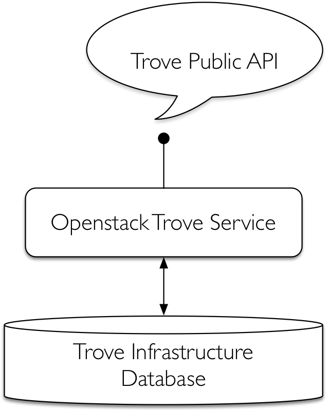</a></div>
<p>Trove的所有用户端，包括CLI（command-line interface）和Horizon仪表盘，都是通过这个公共API与Trove交互的。基础设施数据库可以与其他OpenStack服务共享，也可以是一个专用的数据库。<br>通常这个数据库是Mysql（或某些变体），但理论上可以是SQLAlchemy所支持的任何数据库。Mysql是最常用的后端基础设施数据库。</p>
<p>Trove是OpenStack的其他服务如Nova（计算）、Cinder（块存储）、Swift（对象存储）、Keystone（身份管理）等的用户端。Trove和这些服务交互时，会通过各自的公共API请求进行交互。</p>
<div class="figure center" style="width:;"><a class="fancybox" href="images/trove-2.png" title="" data-caption="" data-fancybox="default">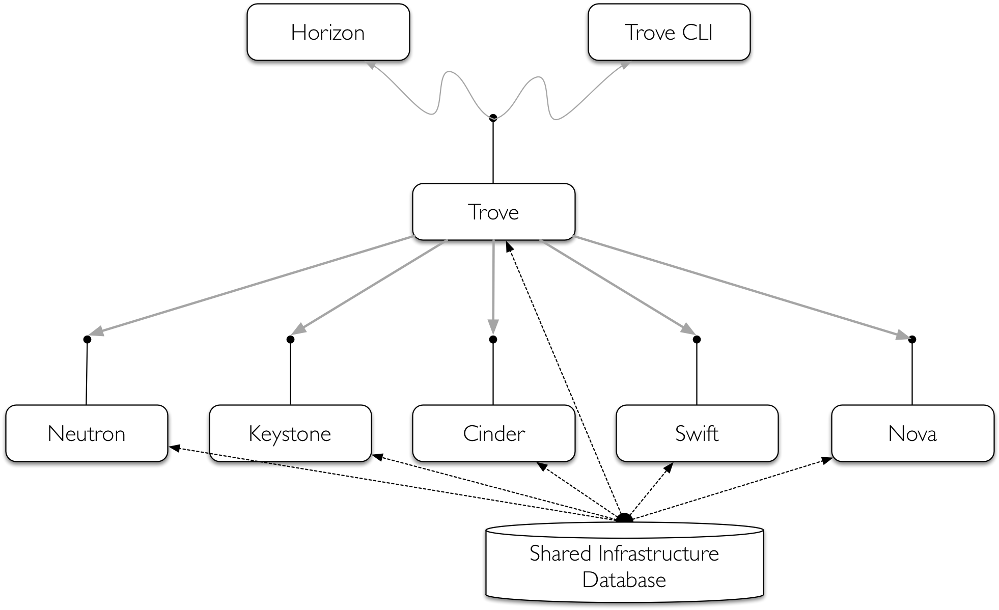</a></div>

<p>Trove 由三个服务组成：trove-api、trove-conductor 和 trove-taskmanager。此外，每个Trove实例都有一个安装了特定的数据库类型的guestagent。</p>
<div class="figure center" style="width:;"><a class="fancybox" href="images/trove-3.png" title="" data-caption="" data-fancybox="default">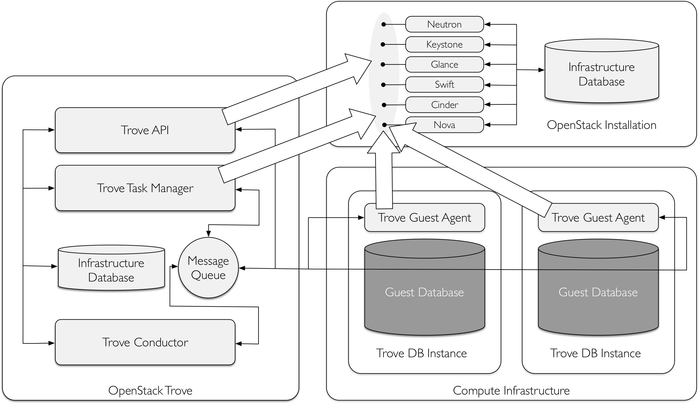</a></div>

<p>上图左边是Trove，由暴露着公共API的trove-api、trove-taskmanager和trove-conductor组成。Trove服务在基础设施数据库上存储持久化型数据。<br>上图中右上部分是OpenStack基本服务的安装和这些服务的基础架构的数据库。右下部分是计算基础设施，包括服务器和存储器，向Nova、Cinder、Swift和Neutron请求计算、存储和网络资源。</p>
<p>当Nova创建了一个计算实例时，它在计算基础设施上完成这个操作。一个Trove实例是一个特殊的Nova实例，包含一个guest数据库和trove-guestagent服务。<br>Trove-guestagent在安装了Trove服务的guest实例上执行操作，并利用消息队列和Trove服务进行通信。</p>
<h1 id="基本服务"><a href="#基本服务" class="headerlink" title="基本服务"></a>基本服务</h1><h2 id="trove-api"><a href="#trove-api" class="headerlink" title="trove-api"></a>trove-api</h2><p>trove-api实现了一个WSGI（web服务器网关接口），并与同Trove交互的所有用户端交互。当trove-api接收到一个请求时，它使用配置的身份验证机制（默认为Keystone服务）验证请求者，验证其身份过后，验证凭据将被附加在该请求上。这些将成为请求者的上下文并在整个进程中被使用。一些简单的请求完全由trove-api进行处理，对于其他请求则可能需要其他的服务的参与。</p>
<div class="alert info"><p>trove-api在Trove控制节点运行。</p>
</div>

<h2 id="trove-taskmanager"><a href="#trove-taskmanager" class="headerlink" title="trove-taskmanager"></a>trove-taskmanager</h2><p>trove-taskmanager执行Trove的大部分复杂操作。<br>它作为一个RPC服务器监听特定topic的消息队列。请求者发送消息到trove-taskmanager，trove-taskmanager在请求者的上下文中调用相应的程序去执行这些请求。trove-taskmanager处理的一些操作：实例的创建、删除；与其他服务如Nova、Cinder、Swift等的交互；一些更复杂的Trove操作如复制和集群；对实例的整个生命周期的管理。</p>
<p>配置文件trove-taskmanager.conf的taskmanager_manager条目中定义了trove-taskmanager的入口。</p>
<figure class="highlight bash"><table><tr><td class="gutter"><pre><span class="line">1</span><br><span class="line">2</span><br></pre></td><td class="code"><pre><span class="line">root@controller-1: grep taskmanager_manager /etc/trove/trove-taskmanager.conf</span><br><span class="line">taskmanager_manager=trove.taskmanager.manager.Manager</span><br></pre></td></tr></table></figure>
<div class="alert info"><p>trove-taskmanager在Trove控制节点运行。</p>
</div>

<h2 id="trove-conductor"><a href="#trove-conductor" class="headerlink" title="trove-conductor"></a>trove-conductor</h2><p>trove-conductor主要用来接收和处理来自trove-guestagent的各种类型的状态更新，在某些情况下是更新Trove基础设施数据库或提供信息给其他服务。<br>trove-conductor作为一个RPC服务器监听特定topic的消息队列。trove-guestagent发送消息给conductor，conductor通过调用相应的程序执行这些请求。Conductor处理trove-guestagent心跳和备份状态等信息。</p>
<p>配置文件trove-conductor.conf中的conductor_manager条目定义了trove-conductor的入口。</p>
<div class="alert info"><p>Trove conductor在Trove控制节点上运行。</p>
</div>

<h2 id="trove-guestagent"><a href="#trove-guestagent" class="headerlink" title="trove guestagent"></a>trove guestagent</h2><p>Trove旨在提供一个一个与数据库无关的功能集合和一个可以实现和扩展的框架。<br>Trove建立的框架依赖于一个guestagent，并提供特定的数据库功能，这些都是通过代码在guest实例上实现的，当有请求时通过taskmanager调用。trove-guestagent的主要目的是作为一个RPC服务器使其他Trove服务可以在guest实例上执行操作。它监听特定topic的消息队列，并在本地执行代码来完成数据库的任务。trove-taskmanager将消息发送到guestagent，guestagent通过调用相应的程序执行这些请求。</p>
<p>guestagent在guest实例上处理所有的请求如prepare()（guest的初始设置过程中调用）、restart()等控制操作。它也处理创建和管理用户、数据库，以及启动备份等操作。</p>
<p>Trove Guest Agent的入口是由在Task Manager创建实例时的过程中设置的datastore_manager配置参数定义的。<br>每一种数据库都有与之对应的不同的Guest Agent。trove.guestagent.dbaas中。</p>
<figure class="highlight python"><table><tr><td class="gutter"><pre><span class="line">1</span><br><span class="line">2</span><br><span class="line">3</span><br><span class="line">4</span><br><span class="line">5</span><br><span class="line">6</span><br><span class="line">7</span><br><span class="line">8</span><br><span class="line">9</span><br><span class="line">10</span><br><span class="line">11</span><br><span class="line">12</span><br><span class="line">13</span><br><span class="line">14</span><br><span class="line">15</span><br><span class="line">16</span><br><span class="line">17</span><br><span class="line">18</span><br><span class="line">19</span><br><span class="line">20</span><br><span class="line">21</span><br><span class="line">22</span><br><span class="line">23</span><br><span class="line">24</span><br><span class="line">25</span><br><span class="line">26</span><br></pre></td><td class="code"><pre><span class="line">defaults = &#123;</span><br><span class="line">    <span class="string">&#x27;mysql&#x27;</span>:</span><br><span class="line">        <span class="string">&#x27;trove.guestagent.datastore.mysql.manager.Manager&#x27;</span>,</span><br><span class="line">    <span class="string">&#x27;percona&#x27;</span>:</span><br><span class="line">        <span class="string">&#x27;trove.guestagent.datastore.experimental.percona.manager.Manager&#x27;</span>,</span><br><span class="line">    <span class="string">&#x27;pxc&#x27;</span>:</span><br><span class="line">        <span class="string">&#x27;trove.guestagent.datastore.experimental.pxc.manager.Manager&#x27;</span>,</span><br><span class="line">    <span class="string">&#x27;redis&#x27;</span>:</span><br><span class="line">        <span class="string">&#x27;trove.guestagent.datastore.experimental.redis.manager.Manager&#x27;</span>,</span><br><span class="line">    <span class="string">&#x27;cassandra&#x27;</span>:</span><br><span class="line">        <span class="string">&#x27;trove.guestagent.datastore.experimental.cassandra.manager.Manager&#x27;</span>,</span><br><span class="line">    <span class="string">&#x27;couchbase&#x27;</span>:</span><br><span class="line">        <span class="string">&#x27;trove.guestagent.datastore.experimental.couchbase.manager.Manager&#x27;</span>,</span><br><span class="line">    <span class="string">&#x27;mongodb&#x27;</span>:</span><br><span class="line">        <span class="string">&#x27;trove.guestagent.datastore.experimental.mongodb.manager.Manager&#x27;</span>,</span><br><span class="line">    <span class="string">&#x27;postgresql&#x27;</span>:</span><br><span class="line">        <span class="string">&#x27;trove.guestagent.datastore.experimental.postgresql.manager.Manager&#x27;</span>,</span><br><span class="line">    <span class="string">&#x27;couchdb&#x27;</span>:</span><br><span class="line">        <span class="string">&#x27;trove.guestagent.datastore.experimental.couchdb.manager.Manager&#x27;</span>,</span><br><span class="line">    <span class="string">&#x27;vertica&#x27;</span>:</span><br><span class="line">        <span class="string">&#x27;trove.guestagent.datastore.experimental.vertica.manager.Manager&#x27;</span>,</span><br><span class="line">    <span class="string">&#x27;db2&#x27;</span>:</span><br><span class="line">        <span class="string">&#x27;trove.guestagent.datastore.experimental.db2.manager.Manager&#x27;</span>,</span><br><span class="line">    <span class="string">&#x27;mariadb&#x27;</span>:</span><br><span class="line">        <span class="string">&#x27;trove.guestagent.datastore.experimental.mariadb.manager.Manager&#x27;</span></span><br><span class="line">&#125;</span><br></pre></td></tr></table></figure>
<div class="alert info"><p>Trove guest agent在Trove guest节点上运行。</p>
</div>


<h1 id="Strategy"><a href="#Strategy" class="headerlink" title="Strategy"></a>Strategy</h1><p>策略是Trove内部的设计结构，允许开发人员通过将Trove总体框架的部分抽离出来，进行新的实现来扩展Trove。</p>
<p>从广义上来说，所有的数据库都提供了某种机制来备份它们的存储数据。Mysql、Postgresql及其他关系数据库都支持备份，MongoDB、Cassandra、Couchbase及许多其他NoSQL数据库也支持备份。然而，它们实际上有各自的生成备份的方法，并且在某些情况下，一个数据库可以有多种生成备份的方法。</p>
<div class="figure center" style="width:;"><a class="fancybox" href="images/trove-strategy.png" title="" data-caption="" data-fancybox="default">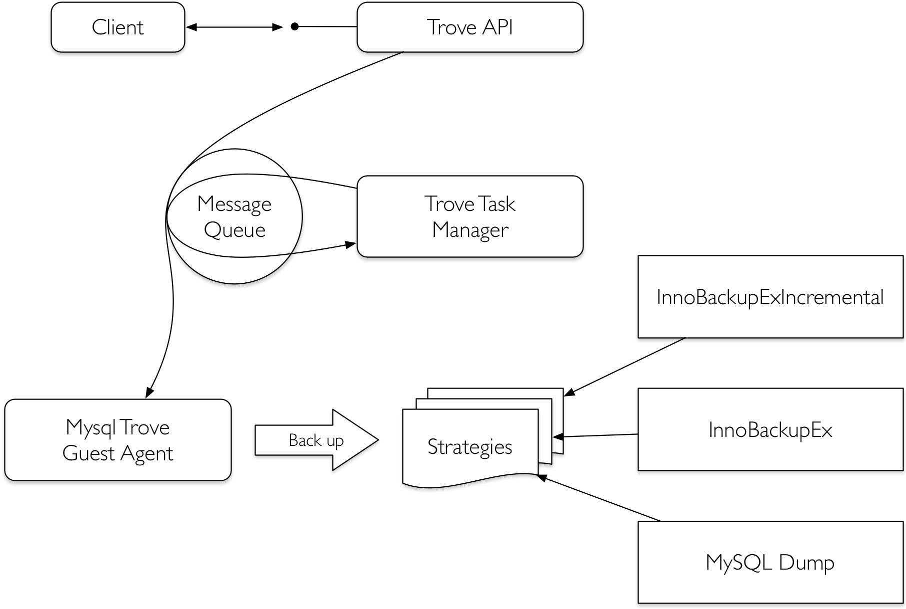</a></div>

<p>用户端通过trove-api发送一个请求给Trove，然后trove-api再将消息发送到trove-taskmanager，taskmanager接下来发送消息到guestagent。</p>
<p>在某些情况下仅存一个对于给定的动作的实现，但在其他情况下可能有多种选择的实现方式。策略机制允许开发者扩展Trove并添加新的实现。</p>
<div class="alert info"><p>目前有用于备份、复制、存储和集群的策略。策略被定义为配置选项。</p>
</div>

<p>例如，目前Mysql的备份策略有三种实现：MySQLDump、InnoBackupEx和InnoBackupExIncremental。</p>
<figure class="highlight python"><table><tr><td class="gutter"><pre><span class="line">1</span><br><span class="line">2</span><br><span class="line">3</span><br><span class="line">4</span><br><span class="line">5</span><br><span class="line">6</span><br><span class="line">7</span><br><span class="line">8</span><br><span class="line">9</span><br><span class="line">10</span><br><span class="line">11</span><br><span class="line">12</span><br><span class="line">13</span><br><span class="line">14</span><br><span class="line">15</span><br><span class="line">16</span><br><span class="line">17</span><br><span class="line">18</span><br><span class="line">19</span><br><span class="line">20</span><br></pre></td><td class="code"><pre><span class="line">cfg.StrOpt(<span class="string">&#x27;backup_strategy&#x27;</span>,</span><br><span class="line">            default=<span class="string">&#x27;InnoBackupEx&#x27;</span>,</span><br><span class="line">            <span class="built_in">help</span>=<span class="string">&#x27;Default strategy to perform backups.&#x27;</span>,</span><br><span class="line">            deprecated_name=<span class="string">&#x27;backup_strategy&#x27;</span>,</span><br><span class="line">            deprecated_group=<span class="string">&#x27;DEFAULT&#x27;</span>)</span><br><span class="line"></span><br><span class="line">cfg.StrOpt(<span class="string">&#x27;backup_namespace&#x27;</span>,</span><br><span class="line">            default=<span class="string">&#x27;trove.guestagent.strategies.backup.mysql_impl&#x27;</span>,</span><br><span class="line">            <span class="built_in">help</span>=<span class="string">&#x27;Namespace to load backup strategies from.&#x27;</span>,</span><br><span class="line">            deprecated_name=<span class="string">&#x27;backup_namespace&#x27;</span>,</span><br><span class="line">            deprecated_group=<span class="string">&#x27;DEFAULT&#x27;</span>)</span><br><span class="line"></span><br><span class="line">cfg.DictOpt(<span class="string">&#x27;backup_incremental_strategy&#x27;</span>,</span><br><span class="line">            default=&#123;<span class="string">&#x27;InnoBackupEx&#x27;</span>: <span class="string">&#x27;InnoBackupExIncremental&#x27;</span>&#125;,</span><br><span class="line">            <span class="built_in">help</span> =<span class="string">&#x27;Incremental Backup Runner based on the default &#x27;</span></span><br><span class="line">                  <span class="string">&#x27;strategy. For strategies that do not implement an &#x27;</span></span><br><span class="line">                  <span class="string">&#x27;incremental backup, the runner will use the default &#x27;</span></span><br><span class="line">                  <span class="string">&#x27;full backup.&#x27;</span>,</span><br><span class="line">            deprecated_name=<span class="string">&#x27;backup_incremental_strategy&#x27;</span>,</span><br><span class="line">            deprecated_group=<span class="string">&#x27;DEFAULT&#x27;</span>)</span><br></pre></td></tr></table></figure>

<p>上面的配置选项（trove/common/cfg.py）定义备份策略并为Mysql数据库使用InnoBackupEx提供命名空间，InnoBackupEx位于trove.guestagent.strategies.backup.mysql_impl中。</p>
<figure class="highlight python"><table><tr><td class="gutter"><pre><span class="line">1</span><br><span class="line">2</span><br><span class="line">3</span><br></pre></td><td class="code"><pre><span class="line"><span class="keyword">class</span> <span class="title class_">InnoBackupEx</span>(base.BackupRunner):</span><br><span class="line">    <span class="string">&quot;&quot;&quot;Implementation of Backup Strategy for InnoBackupEx.&quot;&quot;&quot;</span></span><br><span class="line">    __strategy_name__ = <span class="string">&#x27;innobackupex&#x27;</span></span><br></pre></td></tr></table></figure>

<p>配置选项backup_strategy定义了类的名称，backup_namespace定义了类实现的对象。如果没有实现备份策略，则它将被初始化为None。</p>
<figure class="highlight python"><table><tr><td class="gutter"><pre><span class="line">1</span><br><span class="line">2</span><br><span class="line">3</span><br><span class="line">4</span><br><span class="line">5</span><br></pre></td><td class="code"><pre><span class="line">cfg.StrOpt(<span class="string">&#x27;backup_strategy&#x27;</span>, default=<span class="literal">None</span>,</span><br><span class="line">            <span class="built_in">help</span>=<span class="string">&#x27;Default strategy to perform backups.&#x27;</span>)</span><br><span class="line"></span><br><span class="line">cfg.StrOpt(<span class="string">&#x27;backup_namespace&#x27;</span>, default=<span class="literal">None</span>,</span><br><span class="line">            <span class="built_in">help</span>=<span class="string">&#x27;Namespace to load backup strategies from.&#x27;</span>)</span><br></pre></td></tr></table></figure>

<h1 id="Extension"><a href="#Extension" class="headerlink" title="Extension"></a>Extension</h1><p>Trove也支持一些特定数据库的操作（也叫作扩展），涉及root-show、root-enable、database-list、database-create、database-delete、user-create、user-delete、user-grant-access、user-revoke-access及user-show-access等命令。</p>
<p>Trove使用<a target="_blank" rel="noopener" href="https://www.cnblogs.com/Security-Darren/p/4087587.html">Paste Deploy</a>，及配置文件api-paste.ini，定义了接收到消息及时通过API WSGI服务执行操作的pipeline。</p>
<figure class="highlight python"><table><tr><td class="gutter"><pre><span class="line">1</span><br><span class="line">2</span><br><span class="line">3</span><br><span class="line">4</span><br><span class="line">5</span><br><span class="line">6</span><br><span class="line">7</span><br><span class="line">8</span><br><span class="line">9</span><br></pre></td><td class="code"><pre><span class="line">[pipeline:troveapi]</span><br><span class="line">pipeline = cors http_proxy_to_wsgi faultwrapper osprofiler authtoken authorization contextwrapper ratelimit extensions troveapp</span><br><span class="line"><span class="comment">#pipeline = debug extensions troveapp</span></span><br><span class="line"></span><br><span class="line">[<span class="built_in">filter</span>:extensions]</span><br><span class="line">paste.filter_factory = trove.common.extensions:factory</span><br><span class="line"></span><br><span class="line">[app:troveapp]</span><br><span class="line">paste.app_factory = trove.common.api:app_factory</span><br></pre></td></tr></table></figure>
<p>这里建立的pipline提供了Trove API服务将调用的处理请求的操作列表。</p>
<h1 id="基本操作"><a href="#基本操作" class="headerlink" title="基本操作"></a>基本操作</h1><h2 id="展示实例列表"><a href="#展示实例列表" class="headerlink" title="展示实例列表"></a>展示实例列表</h2><p>Trove中最常用的命令就是获取实例列表并打印它们的状态。列出实例的最简单的命令是trove list。</p>
<figure class="highlight bash"><table><tr><td class="gutter"><pre><span class="line">1</span><br></pre></td><td class="code"><pre><span class="line">trove list</span><br></pre></td></tr></table></figure>
<div class="figure " style="width:;"><a class="fancybox" href="images/trove-list.png" title="" data-caption="" data-fancybox="default">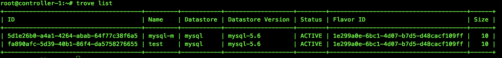</a></div>

<div class="alert info"><p>查看json格式时，可以使用–json命令行选项。</p>
</div>

<p>当实例数量过多时，可以使用–limit命令行选项。</p>
<figure class="highlight bash"><table><tr><td class="gutter"><pre><span class="line">1</span><br></pre></td><td class="code"><pre><span class="line">trove list --<span class="built_in">limit</span> &lt;数字&gt;</span><br></pre></td></tr></table></figure>
<h2 id="启动实例"><a href="#启动实例" class="headerlink" title="启动实例"></a>启动实例</h2><p>启动实例的最基本方法是使用trove create命令并传入以下参数。</p>
<ul>
<li>实例名称（name）</li>
<li>实例的类型id（flavor_id）</li>
<li>持久化卷的大小（size）</li>
<li>数据库类型（datastore）</li>
<li>数据库版本（datastore_version）</li>
</ul>
<figure class="highlight bash"><table><tr><td class="gutter"><pre><span class="line">1</span><br></pre></td><td class="code"><pre><span class="line">trove create &lt;name&gt; &lt;flavor_id&gt; --size &lt;数字(G)&gt; --datastore &lt;datastore_id或datastore_name&gt; --datastore_version &lt;datastore_version_id 或datastore_version_name&gt;</span><br></pre></td></tr></table></figure>
<div class="figure " style="width:;"><a class="fancybox" href="images/trove-create.png" title="" data-caption="" data-fancybox="default">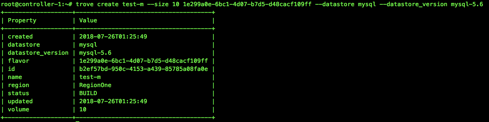</a></div>

<h2 id="重启实例"><a href="#重启实例" class="headerlink" title="重启实例"></a>重启实例</h2><p>实例一旦被创建，就可以用trove restart命令重启实例。这个命令只会重启运行在由Trove管理的Nova实例中的数据库服务，不会重启Nova实例。</p>
<figure class="highlight bash"><table><tr><td class="gutter"><pre><span class="line">1</span><br></pre></td><td class="code"><pre><span class="line">trove restart &lt;实例<span class="built_in">id</span>&gt;</span><br></pre></td></tr></table></figure>

<h2 id="删除实例"><a href="#删除实例" class="headerlink" title="删除实例"></a>删除实例</h2><p>可以使用trove delete命令永久删除一个实例。delete命令是不可逆的，一旦删除了实例，将永远无法访问其上的数据库服务，实例中的所有数据也将消失。</p>
<figure class="highlight bash"><table><tr><td class="gutter"><pre><span class="line">1</span><br></pre></td><td class="code"><pre><span class="line">trove delete &lt;实例<span class="built_in">id</span>&gt;</span><br></pre></td></tr></table></figure>

<h2 id="创建用户和数据库"><a href="#创建用户和数据库" class="headerlink" title="创建用户和数据库"></a>创建用户和数据库</h2><h3 id="启用数据库的root用户"><a href="#启用数据库的root用户" class="headerlink" title="启用数据库的root用户"></a>启用数据库的root用户</h3><p>像Mysql之类的数据库服务都有一个超级用户（root），在默认情况下，Trove的数据库实例是禁止这个用户的。可以利用root用户连接到Mysql数据库服务。</p>
<figure class="highlight bash"><table><tr><td class="gutter"><pre><span class="line">1</span><br></pre></td><td class="code"><pre><span class="line">mysql -uroot -p&lt;password&gt; -h&lt;ip&gt; -s</span><br></pre></td></tr></table></figure>

<ol>
<li><p><strong>在一个运行中的实例上启用root用户</strong></p>
<figure class="highlight bash"><table><tr><td class="gutter"><pre><span class="line">1</span><br></pre></td><td class="code"><pre><span class="line">trove root-enable &lt;实例<span class="built_in">id</span>&gt;</span><br></pre></td></tr></table></figure>
<div class="figure " style="width:;"><a class="fancybox" href="images/trove-root-enable.png" title="" data-caption="" data-fancybox="default">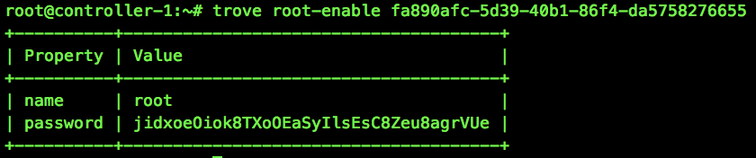</a></div>

<p> 可以使用root-show 查看root用户的状态。</p>
 <figure class="highlight bash"><table><tr><td class="gutter"><pre><span class="line">1</span><br></pre></td><td class="code"><pre><span class="line">trove root-show &lt;实例<span class="built_in">id</span>&gt;</span><br></pre></td></tr></table></figure>
 <div class="figure " style="width:;"><a class="fancybox" href="images/trove-root-show.png" title="" data-caption="" data-fancybox="default">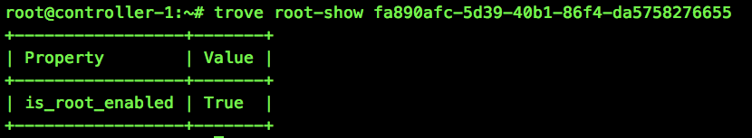</a></div>
</li>
<li><p><strong>启用默认root用户</strong><br>除了在已经存在的数据库实例上启用root用户，也可以在默认情况下启用root用户（在实例创建时）。需要将trove.conf配置文件的[mysql]配置中的root_on_create设为true。</p>
<figure class="highlight bash"><table><tr><td class="gutter"><pre><span class="line">1</span><br><span class="line">2</span><br></pre></td><td class="code"><pre><span class="line">[mysql]</span><br><span class="line">root_on_create = True</span><br></pre></td></tr></table></figure>

 <div class="alert warning"><p>需要重启Trove服务生效。</p>
</div>

</li>
</ol>
<h3 id="数据库操作"><a href="#数据库操作" class="headerlink" title="数据库操作"></a>数据库操作</h3><ol>
<li><p><strong>列出数据库</strong></p>
<figure class="highlight bash"><table><tr><td class="gutter"><pre><span class="line">1</span><br></pre></td><td class="code"><pre><span class="line">trove database-list &lt;实例<span class="built_in">id</span>&gt;</span><br></pre></td></tr></table></figure>
<div class="figure " style="width:;"><a class="fancybox" href="images/trove-database-list.png" title="" data-caption="" data-fancybox="default">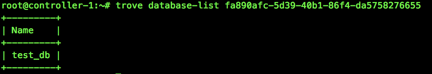</a></div>
</li>
<li><p><strong>禁止某些数据库的显示</strong><br>经常会有一些内置的数据库不需要通过database-list命令显示出来。可以通过设置trove.conf中的ignore_dbs参数禁止这些数据库的显示。</p>
<div class="alert info"><p>ignore_dbs的默认值是lost+found、mysql和information_schema。</p>
</div>
</li>
<li><p><strong>在运行的实例上创建数据库</strong></p>
<figure class="highlight bash"><table><tr><td class="gutter"><pre><span class="line">1</span><br></pre></td><td class="code"><pre><span class="line">trove database-create &lt;实例<span class="built_in">id</span>&gt; &lt;name&gt;</span><br></pre></td></tr></table></figure>
</li>
<li><p><strong>创建实例时创建数据库</strong><br>trove create命令允许在创建实例的同时创建多个数据库。可以指定任意数量的数据库并与用户关联。</p>
<figure class="highlight bash"><table><tr><td class="gutter"><pre><span class="line">1</span><br></pre></td><td class="code"><pre><span class="line">trove create &lt;name&gt; &lt;flavor_id&gt; --size &lt;size&gt; --datastore &lt;datastore&gt; --databases &lt;database1 database2 ...&gt; --<span class="built_in">users</span> &lt;user1:password1 user2:password2 ...&gt;</span><br></pre></td></tr></table></figure>

</li>
</ol>
<h3 id="用户操作"><a href="#用户操作" class="headerlink" title="用户操作"></a>用户操作</h3><ol>
<li><p><strong>在创建实例时创建用户</strong></p>
<figure class="highlight bash"><table><tr><td class="gutter"><pre><span class="line">1</span><br></pre></td><td class="code"><pre><span class="line">trove create &lt;name&gt; &lt;flavor_id&gt; --size &lt;size&gt; --datastore &lt;datastore&gt; --databases &lt;database1 database2 ...&gt; --<span class="built_in">users</span> &lt;user1:password1 user2:password2 ...&gt;</span><br></pre></td></tr></table></figure>
</li>
<li><p><strong>列出用户</strong></p>
<figure class="highlight bash"><table><tr><td class="gutter"><pre><span class="line">1</span><br></pre></td><td class="code"><pre><span class="line">trove user-list &lt;实例<span class="built_in">id</span>&gt;</span><br></pre></td></tr></table></figure>
<div class="figure " style="width:;"><a class="fancybox" href="images/trove-user-list.png" title="" data-caption="" data-fancybox="default">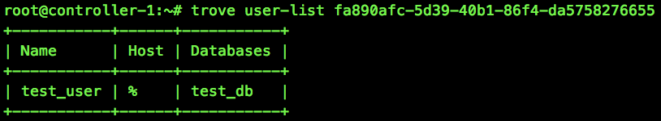</a></div>
</li>
<li><p><strong>在运行的实例上创建用户</strong></p>
<figure class="highlight bash"><table><tr><td class="gutter"><pre><span class="line">1</span><br></pre></td><td class="code"><pre><span class="line">trove user-create &lt;实例<span class="built_in">id</span>&gt; &lt;username&gt; --databases &lt;database _name&gt;</span><br></pre></td></tr></table></figure>
</li>
<li><p><strong>删除用户</strong><br>删除实例的所有用户</p>
<figure class="highlight bash"><table><tr><td class="gutter"><pre><span class="line">1</span><br></pre></td><td class="code"><pre><span class="line">trove user-delete &lt;实例<span class="built_in">id</span>&gt;</span><br></pre></td></tr></table></figure>
<p> 删除实例的指定用户</p>
 <figure class="highlight bash"><table><tr><td class="gutter"><pre><span class="line">1</span><br></pre></td><td class="code"><pre><span class="line">trove user-delete &lt;实例<span class="built_in">id</span>&gt; &lt;username&gt;</span><br></pre></td></tr></table></figure>
</li>
<li><p><strong>管理用户的访问权限</strong></p>
<ol>
<li><p>列出用户的访问权限<br>user-show-access 命令显示了允许用户访问的数据库。</p>
<figure class="highlight bash"><table><tr><td class="gutter"><pre><span class="line">1</span><br></pre></td><td class="code"><pre><span class="line">trove user-show-access &lt;实例<span class="built_in">id</span>&gt; &lt;username&gt;</span><br></pre></td></tr></table></figure>
<div class="figure " style="width:;"><a class="fancybox" href="images/trove-show-user-access.png" title="" data-caption="" data-fancybox="default">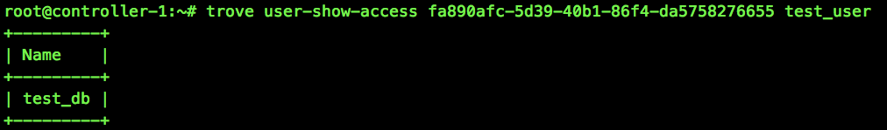</a></div>
</li>
<li><p>在user-list中禁止某些用户<br>一些数据库中有些内置用户不能向用户展示，可以在trove.conf配置文件中使用ignore_users参数禁止用户在user-list命令中显示</p>
<figure class="highlight shell"><table><tr><td class="gutter"><pre><span class="line">1</span><br><span class="line">2</span><br><span class="line">3</span><br></pre></td><td class="code"><pre><span class="line">[DEFAULT]</span><br><span class="line">ignore_users = os_admin,root</span><br><span class="line">...</span><br></pre></td></tr></table></figure>
<div class="alert info"><p>Mysql使用[DEFAULT]配置段</p>
</div>
</li>
<li><p>给予用户访问权限</p>
<figure class="highlight bash"><table><tr><td class="gutter"><pre><span class="line">1</span><br></pre></td><td class="code"><pre><span class="line">trove user-grant-access &lt;实例<span class="built_in">id</span>&gt; &lt;username&gt;</span><br></pre></td></tr></table></figure>
</li>
<li><p>撤销用户访问权限</p>
<figure class="highlight bash"><table><tr><td class="gutter"><pre><span class="line">1</span><br></pre></td><td class="code"><pre><span class="line">trove user-revoke-access &lt;实例<span class="built_in">id</span>&gt; &lt;username&gt;</span><br></pre></td></tr></table></figure>

</li>
</ol>
</li>
</ol>
<h2 id="其他"><a href="#其他" class="headerlink" title="其他"></a>其他</h2><h3 id="查看实例详细信息"><a href="#查看实例详细信息" class="headerlink" title="查看实例详细信息"></a>查看实例详细信息</h3><figure class="highlight bash"><table><tr><td class="gutter"><pre><span class="line">1</span><br></pre></td><td class="code"><pre><span class="line">trove show &lt;实例<span class="built_in">id</span>或name&gt;</span><br></pre></td></tr></table></figure>
<div class="figure " style="width:;"><a class="fancybox" href="images/trove-show.png" title="" data-caption="" data-fancybox="default">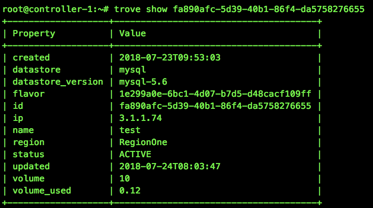</a></div>

<h3 id="查看flavor"><a href="#查看flavor" class="headerlink" title="查看flavor"></a>查看flavor</h3><figure class="highlight bash"><table><tr><td class="gutter"><pre><span class="line">1</span><br></pre></td><td class="code"><pre><span class="line">trove flavor-list</span><br></pre></td></tr></table></figure>
<div class="figure " style="width:;"><a class="fancybox" href="images/trove-flavor-list.png" title="" data-caption="" data-fancybox="default">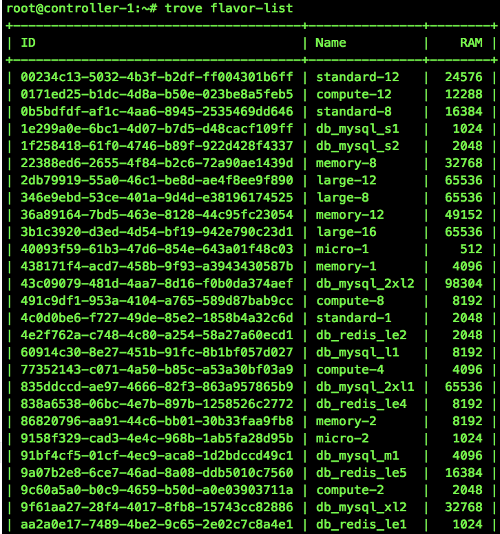</a></div>

<h3 id="查看flavor详细"><a href="#查看flavor详细" class="headerlink" title="查看flavor详细"></a>查看flavor详细</h3><figure class="highlight bash"><table><tr><td class="gutter"><pre><span class="line">1</span><br></pre></td><td class="code"><pre><span class="line">trove flavor-show &lt;实例<span class="built_in">id</span>&gt;</span><br></pre></td></tr></table></figure>
<div class="figure " style="width:;"><a class="fancybox" href="images/trove-flavor-show.png" title="" data-caption="" data-fancybox="default">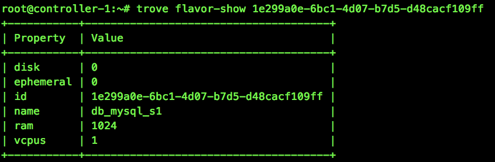</a></div>

<h3 id="查看datastore"><a href="#查看datastore" class="headerlink" title="查看datastore"></a>查看datastore</h3><figure class="highlight bash"><table><tr><td class="gutter"><pre><span class="line">1</span><br></pre></td><td class="code"><pre><span class="line">trove datastore-list</span><br></pre></td></tr></table></figure>
<div class="figure " style="width:;"><a class="fancybox" href="images/trove-datastore-list.png" title="" data-caption="" data-fancybox="default">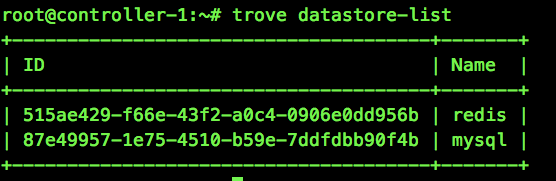</a></div>
<h3 id="查看datastore详细"><a href="#查看datastore详细" class="headerlink" title="查看datastore详细"></a>查看datastore详细</h3><figure class="highlight bash"><table><tr><td class="gutter"><pre><span class="line">1</span><br></pre></td><td class="code"><pre><span class="line">trove datastore-show &lt;datastore_id&gt;</span><br></pre></td></tr></table></figure>
<div class="figure " style="width:;"><a class="fancybox" href="images/trove-datastore-show.png" title="" data-caption="" data-fancybox="default">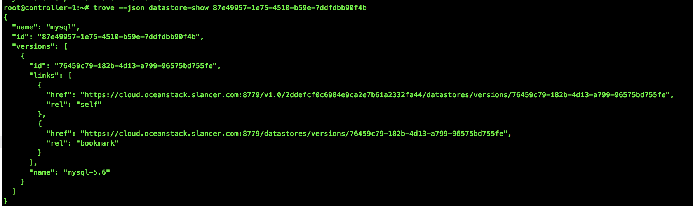</a></div>

<h3 id="查看datastore版本"><a href="#查看datastore版本" class="headerlink" title="查看datastore版本"></a>查看datastore版本</h3><figure class="highlight bash"><table><tr><td class="gutter"><pre><span class="line">1</span><br></pre></td><td class="code"><pre><span class="line">trove datastore-version-list &lt;datastore_id&gt;</span><br></pre></td></tr></table></figure>
<div class="figure " style="width:;"><a class="fancybox" href="images/trove-datastore-version-list.png" title="" data-caption="" data-fancybox="default">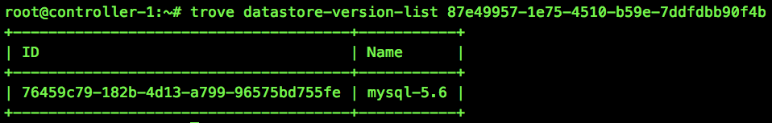</a></div>

<h3 id="帮助"><a href="#帮助" class="headerlink" title="帮助"></a>帮助</h3><figure class="highlight bash"><table><tr><td class="gutter"><pre><span class="line">1</span><br></pre></td><td class="code"><pre><span class="line">trove <span class="built_in">help</span> &lt;命令&gt;</span><br></pre></td></tr></table></figure>
<div class="figure " style="width:;"><a class="fancybox" href="images/trove-help.png" title="" data-caption="" data-fancybox="default">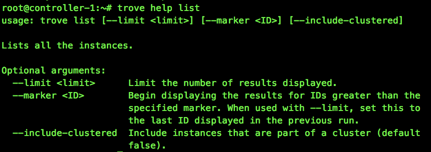</a></div>

<h1 id="高级操作"><a href="#高级操作" class="headerlink" title="高级操作"></a>高级操作</h1><h2 id="自定义flavor"><a href="#自定义flavor" class="headerlink" title="自定义flavor"></a>自定义flavor</h2><p>在启动一个Trove实例时，必须要指定一个flavor。flavor是虚拟机的模板，提供了基本的硬件配置信息，例如内存、磁盘空间、虚拟CPU的数量等等。</p>
<h3 id="查看可用flavor"><a href="#查看可用flavor" class="headerlink" title="查看可用flavor"></a>查看可用flavor</h3><figure class="highlight bash"><table><tr><td class="gutter"><pre><span class="line">1</span><br></pre></td><td class="code"><pre><span class="line">trove flavor-list</span><br></pre></td></tr></table></figure>
<div class="figure " style="width:;"><a class="fancybox" href="images/trove-flavor-list.png" title="" data-caption="" data-fancybox="default"></a></div>

<h3 id="查看nova的flavor"><a href="#查看nova的flavor" class="headerlink" title="查看nova的flavor"></a>查看nova的flavor</h3><figure class="highlight bash"><table><tr><td class="gutter"><pre><span class="line">1</span><br></pre></td><td class="code"><pre><span class="line">nova flavor-list</span><br></pre></td></tr></table></figure>
<p>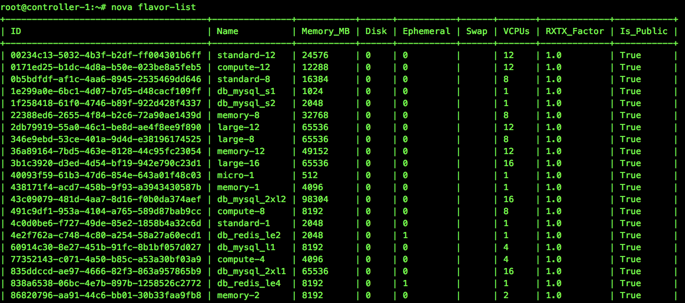</p>
<h3 id="创建flavor"><a href="#创建flavor" class="headerlink" title="创建flavor"></a>创建flavor</h3><figure class="highlight bash"><table><tr><td class="gutter"><pre><span class="line">1</span><br></pre></td><td class="code"><pre><span class="line">nova flavor-create &lt;name&gt; &lt;<span class="built_in">id</span>&gt; &lt;ram&gt; &lt;disk&gt; &lt;vcpus&gt;</span><br></pre></td></tr></table></figure>

<h2 id="备份"><a href="#备份" class="headerlink" title="备份"></a>备份</h2><span id="more"></span>

<h3 id="新建备份"><a href="#新建备份" class="headerlink" title="新建备份"></a>新建备份</h3><figure class="highlight bash"><table><tr><td class="gutter"><pre><span class="line">1</span><br></pre></td><td class="code"><pre><span class="line">trove backup-create &lt;实例<span class="built_in">id</span>&gt; &lt;name&gt;</span><br></pre></td></tr></table></figure>
<div class="figure " style="width:;"><a class="fancybox" href="images/trove-backup-create.png" title="" data-caption="" data-fancybox="default">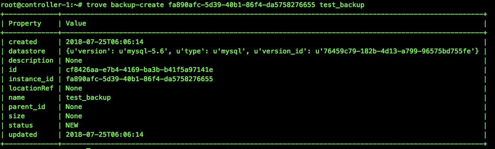</a></div>

<h3 id="新建增量备份"><a href="#新建增量备份" class="headerlink" title="新建增量备份"></a>新建增量备份</h3><p>Trove还支持基于现有备份创建增量备份。</p>
<figure class="highlight bash"><table><tr><td class="gutter"><pre><span class="line">1</span><br></pre></td><td class="code"><pre><span class="line">trove backup-create &lt;实例<span class="built_in">id</span>&gt; &lt;name&gt; --parent &lt;已有备份<span class="built_in">id</span>&gt; --description <span class="string">&quot;&lt;description&gt;&quot;</span></span><br></pre></td></tr></table></figure>

<h3 id="恢复备份"><a href="#恢复备份" class="headerlink" title="恢复备份"></a>恢复备份</h3><p>恢复备份的操作通过启动基于备份的新实例来完成。在Trove中，不能加载备份到现有实例中。</p>
<figure class="highlight bash"><table><tr><td class="gutter"><pre><span class="line">1</span><br></pre></td><td class="code"><pre><span class="line">trove create &lt;name&gt; &lt;flavor_id&gt; --size &lt;num&gt; --backup &lt;backup_id&gt;</span><br></pre></td></tr></table></figure>

<h3 id="删除备份"><a href="#删除备份" class="headerlink" title="删除备份"></a>删除备份</h3><figure class="highlight bash"><table><tr><td class="gutter"><pre><span class="line">1</span><br></pre></td><td class="code"><pre><span class="line">trove backup-delete &lt;备份的<span class="built_in">id</span>/name&gt;</span><br></pre></td></tr></table></figure>

<h3 id="查看备份"><a href="#查看备份" class="headerlink" title="查看备份"></a>查看备份</h3><figure class="highlight bash"><table><tr><td class="gutter"><pre><span class="line">1</span><br></pre></td><td class="code"><pre><span class="line">trove backup-list</span><br></pre></td></tr></table></figure>
<div class="figure " style="width:;"><a class="fancybox" href="images/trove-backup-list.png" title="" data-caption="" data-fancybox="default">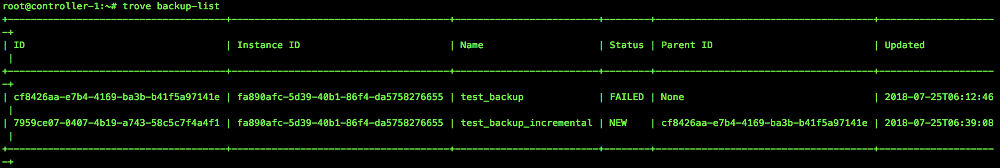</a></div>

<h3 id="找到指定实例的所有备份"><a href="#找到指定实例的所有备份" class="headerlink" title="找到指定实例的所有备份"></a>找到指定实例的所有备份</h3><figure class="highlight bash"><table><tr><td class="gutter"><pre><span class="line">1</span><br></pre></td><td class="code"><pre><span class="line">trove backup-list-instance &lt;实例<span class="built_in">id</span>&gt;</span><br></pre></td></tr></table></figure>

<h2 id="主从"><a href="#主从" class="headerlink" title="主从"></a>主从</h2><h3 id="创建从节点"><a href="#创建从节点" class="headerlink" title="创建从节点"></a>创建从节点</h3><p>查看主节点信息。</p>
<figure class="highlight bash"><table><tr><td class="gutter"><pre><span class="line">1</span><br></pre></td><td class="code"><pre><span class="line">trove show &lt;实例<span class="built_in">id</span>&gt;</span><br></pre></td></tr></table></figure>
<p>创建副本。</p>
<figure class="highlight bash"><table><tr><td class="gutter"><pre><span class="line">1</span><br></pre></td><td class="code"><pre><span class="line">trove create &lt;name&gt; &lt;flavor_id&gt; --size &lt;num&gt; --replica_of &lt;实例<span class="built_in">id</span>&gt; --replica_count &lt;count&gt;</span><br></pre></td></tr></table></figure>
<div class="figure " style="width:;"><a class="fancybox" href="images/trove-create-replica.png" title="" data-caption="" data-fancybox="default">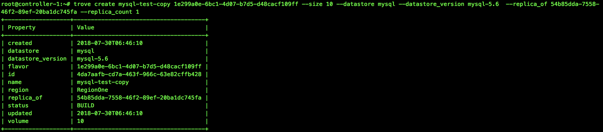</a></div>

<div class="alert info no-icon"><p>replica_count允许同时创建多个副本。默认值是1。</p>
</div>
<h3 id="故障切换"><a href="#故障切换" class="headerlink" title="故障切换"></a>故障切换</h3><p>在复制环境中，有一个主节点和一个或多个副本。可能用户会从目前可用的副本中选出新的主节点。这个过程称为故障切换。</p>
<h4 id="有序故障切换"><a href="#有序故障切换" class="headerlink" title="有序故障切换"></a>有序故障切换</h4><p>使用promote-to-replica-source命令替换当前的主节点。</p>
<figure class="highlight bash"><table><tr><td class="gutter"><pre><span class="line">1</span><br></pre></td><td class="code"><pre><span class="line">trove promote-to-replica-source &lt;副本实例<span class="built_in">id</span>/name&gt;</span><br></pre></td></tr></table></figure>
<p>打破主节点和副本之间的复制的另一种方法是将副本从主节点上分离出来，这是一种不可逆的操作，通常用于在一个时间点生成一个数据集的备份，并可以随后用于生成该时间点的新实例。</p>
<figure class="highlight bash"><table><tr><td class="gutter"><pre><span class="line">1</span><br></pre></td><td class="code"><pre><span class="line">trove detach-replica &lt;副本实例<span class="built_in">id</span>/name&gt;</span><br></pre></td></tr></table></figure>

<h4 id="主节点失败的故障切换"><a href="#主节点失败的故障切换" class="headerlink" title="主节点失败的故障切换"></a>主节点失败的故障切换</h4><p>使用eject-replica-source命令来处理主节点失败的情况。当对一个失败的主节点执行该命令时，会将该主节点抛弃并选举出新的主节点。<br>该命令有些保护措施。当针对一个不是主节点的实例执行时，该命令会出错。此外针对一个运行正常的主节点执行时，命令也会失败。</p>
<figure class="highlight bash"><table><tr><td class="gutter"><pre><span class="line">1</span><br></pre></td><td class="code"><pre><span class="line">trove eject-replica-source &lt;失败主节点实例<span class="built_in">id</span>/name&gt;</span><br></pre></td></tr></table></figure>
            


        </div>
    </div>
    <div id="post-footer" class="post-footer main-content-wrap">
        
            <div class="post-footer-tags">
                <span class="text-color-light text-small">TAGGED IN</span><br/>
                
    <a class="tag tag--primary tag--small t-none-link" href="/tags/Trove/" rel="tag">Trove</a>

            </div>
        
        
            <div class="post-actions-wrap">
    <nav>
        <ul class="post-actions post-action-nav">
            <li class="post-action">
                
                    
                <a
                    class="post-action-btn btn btn--default tooltip--top"
                    href="/2018/09/12/Mysql%E6%9E%B6%E6%9E%84%E7%AF%87%E4%B9%8B%E5%A4%8D%E5%88%B6%EF%BC%88%E4%B8%80%EF%BC%89/"
                    data-tooltip="Mysql架构篇之复制（一）"
                    aria-label="PREVIOUS: Mysql架构篇之复制（一）"
                >
                    
                        <i class="fa fa-angle-left" aria-hidden="true"></i>
                        <span class="hide-xs hide-sm text-small icon-ml">PREVIOUS</span>
                    </a>
            </li>
            <li class="post-action">
                
                    
                <a
                    class="post-action-btn btn btn--default tooltip--top"
                    href="/2018/07/26/Mysql%E5%9F%BA%E7%A1%80%E7%AF%87%E4%B9%8BSQL%E5%9F%BA%E7%A1%80/"
                    data-tooltip="Mysql基础篇之SQL基础"
                    aria-label="NEXT: Mysql基础篇之SQL基础"
                >
                    
                        <span class="hide-xs hide-sm text-small icon-mr">NEXT</span>
                        <i class="fa fa-angle-right" aria-hidden="true"></i>
                    </a>
            </li>
        </ul>
    </nav>
    <ul class="post-actions post-action-share">
        <li class="post-action hide-lg hide-md hide-sm">
            <a
                class="post-action-btn btn btn--default btn-open-shareoptions"
                href="#btn-open-shareoptions"
                aria-label="Share this post"
            >
                <i class="fa fa-share-alt" aria-hidden="true"></i>
            </a>
        </li>
        
            
            
            <li class="post-action hide-xs">
                <a
                    class="post-action-btn btn btn--default"
                    target="new" href="http://service.weibo.com/share/share.php?&amp;title=https://wangkuntian.github.io/2018/09/04/%E6%88%91%E6%89%80%E7%90%86%E8%A7%A3%E7%9A%84Trove/"
                    title="Share on Weibo"
                    aria-label="Share on Weibo"
                >
                    <i class="fab fa-weibo" aria-hidden="true"></i>
                </a>
            </li>
        
            
            
            <li class="post-action hide-xs">
                <a
                    class="post-action-btn btn btn--default"
                    target="new" href="http://connect.qq.com/widget/shareqq/index.html?url=https://wangkuntian.github.io/2018/09/04/%E6%88%91%E6%89%80%E7%90%86%E8%A7%A3%E7%9A%84Trove/&amp;title=我所理解的Trove"
                    title="Share on QQ"
                    aria-label="Share on QQ"
                >
                    <i class="fab fa-qq" aria-hidden="true"></i>
                </a>
            </li>
        
            
            
            <li class="post-action hide-xs">
                <a
                    class="post-action-btn btn btn--default"
                    target="new" href="http://sns.qzone.qq.com/cgi-bin/qzshare/cgi_qzshare_onekey?url=https://wangkuntian.github.io/2018/09/04/%E6%88%91%E6%89%80%E7%90%86%E8%A7%A3%E7%9A%84Trove/"
                    title="Share on Qzone"
                    aria-label="Share on Qzone"
                >
                    <i class="fa fa-star" aria-hidden="true"></i>
                </a>
            </li>
        
        
            
        
        <li class="post-action">
            
                <a class="post-action-btn btn btn--default" href="#table-of-contents" aria-label="目录">
            
                <i class="fa fa-list" aria-hidden="true"></i>
            </a>
        </li>
    </ul>
</div>


        
        
            
        
    </div>
</article>

<div class="main-content-wrap">
    
        
            <script src="//cdn.jsdelivr.net/npm/@waline/client"></script>
阅读量：<span id="2018/09/04/我所理解的Trove/" class="waline-visitor-count"></span>
<div id="vcomments"></div>
<script>
    new Waline({
        el: "#vcomments",
        serverURL: "https://blog-api-nu-nine.vercel.app/",
        lang: "zh-cn",
        visitor: true,
        emoji: [
            "https://cdn.jsdelivr.net/gh/walinejs/emojis@1.0.0/bilibili",
            "https://cdn.jsdelivr.net/gh/walinejs/emojis@1.0.0/qq",
        ],
        placeholder: "ヾﾉ≧∀≦)o来啊，快活啊!",
        dark: "auto",
        meta: ["nick", "mail", "link"],
        requiredMeta: [],
        wordLimit: "200",
        pageSize: "10",
        highlight: "hanabi",
        copyright: true,
        avatar: "wavatar",
    });
</script>
  
        
    
</div>


                <footer id="footer" class="main-content-wrap">
    <span class="copyrights">
        Copyrights &copy; 2024 Wang kuntian. All Rights Reserved.
    </span>
</footer>

            </div>
            
                <div id="bottom-bar" class="post-bottom-bar" data-behavior="4">
                    <div class="post-actions-wrap">
    <nav>
        <ul class="post-actions post-action-nav">
            <li class="post-action">
                
                    
                <a
                    class="post-action-btn btn btn--default tooltip--top"
                    href="/2018/09/12/Mysql%E6%9E%B6%E6%9E%84%E7%AF%87%E4%B9%8B%E5%A4%8D%E5%88%B6%EF%BC%88%E4%B8%80%EF%BC%89/"
                    data-tooltip="Mysql架构篇之复制（一）"
                    aria-label="PREVIOUS: Mysql架构篇之复制（一）"
                >
                    
                        <i class="fa fa-angle-left" aria-hidden="true"></i>
                        <span class="hide-xs hide-sm text-small icon-ml">PREVIOUS</span>
                    </a>
            </li>
            <li class="post-action">
                
                    
                <a
                    class="post-action-btn btn btn--default tooltip--top"
                    href="/2018/07/26/Mysql%E5%9F%BA%E7%A1%80%E7%AF%87%E4%B9%8BSQL%E5%9F%BA%E7%A1%80/"
                    data-tooltip="Mysql基础篇之SQL基础"
                    aria-label="NEXT: Mysql基础篇之SQL基础"
                >
                    
                        <span class="hide-xs hide-sm text-small icon-mr">NEXT</span>
                        <i class="fa fa-angle-right" aria-hidden="true"></i>
                    </a>
            </li>
        </ul>
    </nav>
    <ul class="post-actions post-action-share">
        <li class="post-action hide-lg hide-md hide-sm">
            <a
                class="post-action-btn btn btn--default btn-open-shareoptions"
                href="#btn-open-shareoptions"
                aria-label="Share this post"
            >
                <i class="fa fa-share-alt" aria-hidden="true"></i>
            </a>
        </li>
        
            
            
            <li class="post-action hide-xs">
                <a
                    class="post-action-btn btn btn--default"
                    target="new" href="http://service.weibo.com/share/share.php?&amp;title=https://wangkuntian.github.io/2018/09/04/%E6%88%91%E6%89%80%E7%90%86%E8%A7%A3%E7%9A%84Trove/"
                    title="Share on Weibo"
                    aria-label="Share on Weibo"
                >
                    <i class="fab fa-weibo" aria-hidden="true"></i>
                </a>
            </li>
        
            
            
            <li class="post-action hide-xs">
                <a
                    class="post-action-btn btn btn--default"
                    target="new" href="http://connect.qq.com/widget/shareqq/index.html?url=https://wangkuntian.github.io/2018/09/04/%E6%88%91%E6%89%80%E7%90%86%E8%A7%A3%E7%9A%84Trove/&amp;title=我所理解的Trove"
                    title="Share on QQ"
                    aria-label="Share on QQ"
                >
                    <i class="fab fa-qq" aria-hidden="true"></i>
                </a>
            </li>
        
            
            
            <li class="post-action hide-xs">
                <a
                    class="post-action-btn btn btn--default"
                    target="new" href="http://sns.qzone.qq.com/cgi-bin/qzshare/cgi_qzshare_onekey?url=https://wangkuntian.github.io/2018/09/04/%E6%88%91%E6%89%80%E7%90%86%E8%A7%A3%E7%9A%84Trove/"
                    title="Share on Qzone"
                    aria-label="Share on Qzone"
                >
                    <i class="fa fa-star" aria-hidden="true"></i>
                </a>
            </li>
        
        
            
        
        <li class="post-action">
            
                <a class="post-action-btn btn btn--default" href="#table-of-contents" aria-label="目录">
            
                <i class="fa fa-list" aria-hidden="true"></i>
            </a>
        </li>
    </ul>
</div>


                </div>
                
    <div id="share-options-bar" class="share-options-bar" data-behavior="4">
        <i id="btn-close-shareoptions" class="fa fa-times"></i>
        <ul class="share-options">
            
                
                
                <li class="share-option">
                    <a
                        class="share-option-btn"
                        target="new"
                        href="http://service.weibo.com/share/share.php?&amp;title=https://wangkuntian.github.io/2018/09/04/%E6%88%91%E6%89%80%E7%90%86%E8%A7%A3%E7%9A%84Trove/"
                        aria-label="Share on Weibo"
                    >
                        <i class="fab fa-weibo" aria-hidden="true"></i><span>Share on Weibo</span>
                    </a>
                </li>
            
                
                
                <li class="share-option">
                    <a
                        class="share-option-btn"
                        target="new"
                        href="http://connect.qq.com/widget/shareqq/index.html?url=https://wangkuntian.github.io/2018/09/04/%E6%88%91%E6%89%80%E7%90%86%E8%A7%A3%E7%9A%84Trove/&amp;title=我所理解的Trove"
                        aria-label="Share on QQ"
                    >
                        <i class="fab fa-qq" aria-hidden="true"></i><span>Share on QQ</span>
                    </a>
                </li>
            
                
                
                <li class="share-option">
                    <a
                        class="share-option-btn"
                        target="new"
                        href="http://sns.qzone.qq.com/cgi-bin/qzshare/cgi_qzshare_onekey?url=https://wangkuntian.github.io/2018/09/04/%E6%88%91%E6%89%80%E7%90%86%E8%A7%A3%E7%9A%84Trove/"
                        aria-label="Share on Qzone"
                    >
                        <i class="fa fa-star" aria-hidden="true"></i><span>Share on Qzone</span>
                    </a>
                </li>
            
        </ul>
    </div>


            
        </div>
        


    
        
    

<div id="about">
    <div id="about-card">
        <div id="about-btn-close">
            <i class="fa fa-times"></i>
        </div>
        
            
        
            <h4 id="about-card-name">Wang kuntian</h4>
        
            <div id="about-card-bio"><p>Hi</p>
</div>
        
        
            <div id="about-card-job">
                <i class="fa fa-briefcase"></i>
                <br/>
                <p>Software Engineer</p>

            </div>
        
        
            <div id="about-card-location">
                <i class="fa fa-map-marker-alt"></i>
                <br/>
                Beijing
            </div>
        
    </div>
</div>

        
        
<div id="cover" style="background-image:url('/assets/images/cover-v1.2.0.jpg');"></div>
        <!--SCRIPTS-->

<script src="/assets/js/script-ndtc2tx33sr3grlppafri7aw03fwgxbruphsl7cntcdkym8tusuknerf6c0g.min.js"></script>

<!--SCRIPTS END-->


    


    <script src="/live2dw/lib/L2Dwidget.min.js?094cbace49a39548bed64abff5988b05"></script><script>L2Dwidget.init({"display":{"superSample":2.5,"width":180,"height":400,"position":"right","hOffset":0,"vOffset":40},"mobile":{"show":true,"scale":0.5},"react":{"opacityDefault":0.7,"opacityOnHover":0.2},"dialog":{"enable":true,"hitokoto":false},"pluginRootPath":"live2dw/","pluginJsPath":"lib/","pluginModelPath":"assets/","tagMode":false,"debug":false,"model":{"scale":1,"hHeadPos":0.5,"vHeadPos":0.618,"jsonPath":"/live2dw/assets/hibiki.model.json"},"log":false});</script></body>
</html>
